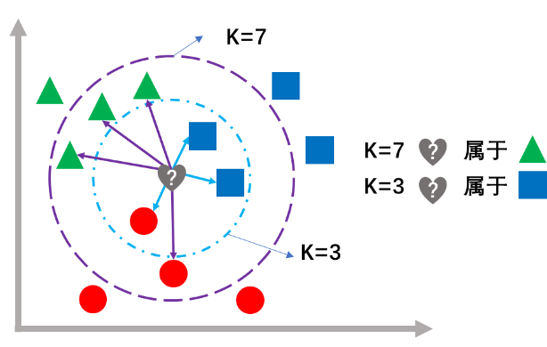
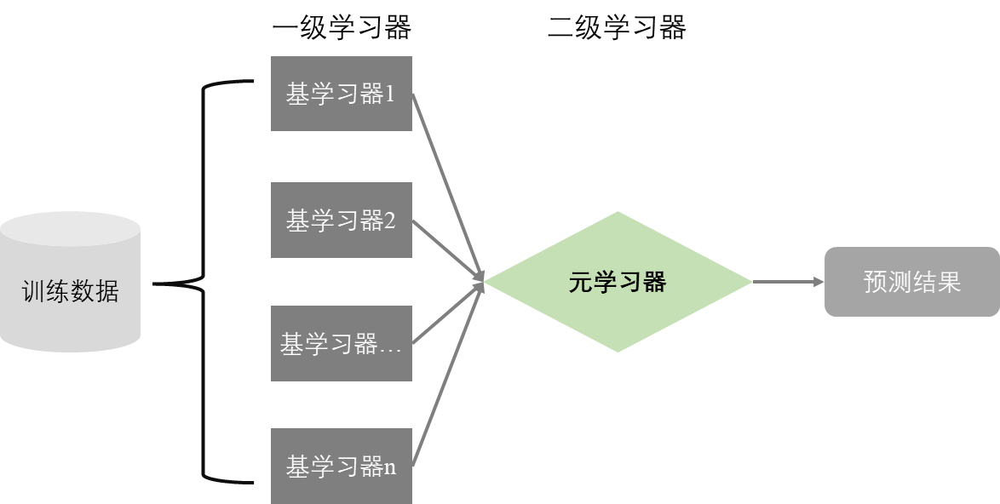

5 R语言机器学习建模
1955 年，人工智能之父John McCarthy等人为次年的达特茅斯会议撰写的建议书中提出了“人工智能”(Artificial Intelligence，AI)。1959年，当时在IBM公司研究跳棋游戏的Arthur Samuel提出了“机器学习”(ML)，他开发的跳棋程序能够通过跟人下棋来提升下棋水平。此后，人工智能发展几经高潮和低谷，直到进入21世纪，由于计算机硬件特别是GPU(图形处理单元)性能的大幅度提升，让机器学习技术获得突破。2006年，神经网络之父Geoffrey Hinton提出了“深度学习”的概念，再一次推动神经网络的发展。2012年，Alex Krizhevsky开发的基于卷积神经网络(CNN)的AlexNet模型在著名的ImageNet挑战中一举夺魁，识别错误率比上年冠军模型降低了10个百分点。AlexNet的出现及其优异表现让深度学习研究和应用进入空前的高潮期。2017年Google公司提出的基于注意力的Transformer模型是一个重要的转折点，极大地推动了自然语言处理(NLP)模型的发展，涌现了一批如GPT、BERT等优秀的NLP模型。2023年3月，OpenAI公司推出的ChatGPT 4.0版本大语言模型(LLM)，能够根据用户的输入生成相关内容，即AIGC(人工智能内容生成)，包括文本、代码、图片等，可以协助人类提高工作效率。华为、阿里巴巴和百度也分别推出盘古、通义千问和文心一言等LLM。
今天，AI几乎覆盖了人类生活和生产的各个领域，例如智能制造、智慧医疗、智慧农业、智慧教育、智慧家居、智慧交通、智慧金融等，并已经开始帮助科学家更高效地开展科学研究。
本章主要基于R语言中的mlr3verse套件开展传统机器学习建模，通过案例学习和掌握机器学习的基础知识、建模步骤和主要算法。
5.1 机器学习概述
百度百科对人工智能的定义是：“人工智能是研究、开发用于模拟、延伸和扩展人的智能的理论、方法、技术及应用系统的一门新的技术科学”。机器学习是实现人工智能的一个重要途径，而深度学习则是机器学习的子领域。深度学习能够利用更强大的算力构建更复杂的深层神经网络模型，实现了特征工程的自动化，能够更好地从文本、语音、图像、视频等非结构性数据中学习内在规律和表示层次，代表了目前机器学习的最高水平。目前，除了我国学者周志华教授的团队于2020年提出的基于决策树集成技术的深度森林模型(gcForest)外，深度学习主要基于人工神经网络。
卡内基梅隆大学汤姆·米歇尔教授对机器学习的定义：对于某类任务T和性能度量P，若一个计算机程序在T上用P衡量的性能随着经验E而自我完善，则称该计算机程序在从经验E学习。大多数场景下，机器学习就是让计算机通过算法对大量历史数据进行学习，生成经验模型，然后利用经验模型进行预测。机器学习更加注重模型的性能，如预测的准确性，而统计分析与建模则注重可解释性，但其理论仍然是机器学习的重要基础，并在机器学习模型可解释性的研究中发挥着重要作用。更重要的是，机器学习更擅长于解决现实世界中绝大部分的本质非线性关系的复杂问题。
5.1.1 机器学习的方式
机器学习根据学习方式可分为有监督学习、无监督学习、半监督学习和强化学习。
有监督学习使用一组由输入特征(Feature)和对应的输出标签(Label)构成的学习数据来建立模型，然后利用模型预测新的输入特征的输出标签(图 5.1 左图)。例如，根据已有的水质指标(输入特征)及对应富营养化程度(输出标签)的样本建立机器学习模型，然后用来预测新的输入特征对应的富营养程度。
无监督学习使用只有输入特征而没有输出标签的学习数据，让机器学习算法挖掘学习数据中的内在规律和逻辑，形成合理的知识表示(图 5.1 右图)。例如，根据大量来自不同污染源的特征，让无监督学习算法自动分析其中哪些污染源是相似的，或者哪些是异常的。
半监督学习是前两种学习方式的混合，数据中大多没有输出标签，少数有输出标签。半监督学习利用少量有标签数据点建立预测模型，为大量无标签数据点预测对应标签，然后利用所有数据建立机器学习模型。由于现实中存在大量无标签的数据，人工标签数据工作量极大甚至不可能，利用半监督学习算法进行自动化标签，可以让大量无标签数据得到充分利用。
强化学习是在给定的环境中，通过环境的反馈机制和奖惩机制，让智能体以试错的方式去学习，改进行动方案以获胜或提升价值，从而适应环境。
在机器学习和深度学习中，统计分析与建模中的自变量或预测变量一般称为特征，而因变量或响应变量、目标变量称为标签。
由于机器学习涉及的知识范围极为广泛，本书只介绍基于R包mlr3的传统机器学习和基于R包torch的深度学习，并聚焦于有监督学习。
5.1.2 机器学习的任务类型
常见的机器学习任务类型包括分类、回归、聚类和降维，如 图 5.2 所示。
分类和回归任务属于有监督学习。尽管分类模型输出标签是类别，回归模型输出标签是数值，但本质相同，因为类别可以用离散变量甚至连续变量(如概率值)来表示。
聚类是一种典型的无监督学习。作为一种重要的归纳方法，聚类通常用于数据预处理和探索性分析，从大量数据聚焦到少数类别上，以获得更有价值的数据洞察。
降维是将高维数据的维度降低，是在机器学习建模前对数据进行预处理的一种重要方法。大数据不仅观测多，更重要的是变量维度(特征)太多，如光谱分析数据、基因测序数据的变量动辄成千上万，存在大量冗余和噪声。降维算法能够显著减少冗余特征、弱化噪声干扰、降低存储空间占用、加快学习建模进程，并有利于实现可视化等。降维的途径主要有特征选择和特征提取。特征选择是从现有特征空间中取一个低维度的有代表性的子集，“取其精华、去其糟粕”，没有改变特征的物理意义。而特征提取则是将不同特征加以融合，形成新的特征空间，改变了原始特征的物理意义，主成分分析就是一种典型的特征提取算法。
5.1.3 机器学习的基本术语
5.1.3.1 算法与模型、参数与超参数
机器学习算法是在数据上运行并建立机器学习模型的过程，称为算法从数据“学习(learning)”或“拟合(fitting)”的过程，也称为训练(training)模型的过程。机器学习模型是机器学习算法在数据上运行的输出结果。机器学习算法有很多种，如神经网络、决策树、支持向量机等。
模型拥有确定的参数(parameters)，是算法参数空间中的一个具体示例。模型参数可以视为一种知识的归纳或表示，是算法从数据中学习或拟合得到的具体成果。算法在数据上运行之前需要根据学习任务的具体情况而设定的参数称为超参数(hyperparameters)。与模型参数不同，超参数不是算法从数据中学习得到的，而需要在学习前预先设定。超参数影响算法的学习过程，对模型性能有重要影响。例如神经网络的每个神经元层的激活函数类型、决策树的最大建树深度、支持向量机的惩罚系数等。算法的超参数可以通过调节或优化而让学习或建模过程更有效和更高效，从而提升最终模型的泛化性能(Generalization Performance)。
5.1.3.2 训练集、测试集和验证集
机器学习建模前，通常需要将学习数据分割成训练集(train set)和测试集(test set)，分割比例一般根据学习数据量的大小来确定，对于中小规模的数据，训练集比例一般为2/3~4/5，而大规模数据，可以适当减少训练集的比例。算法在训练集上学习以建立模型，模型在测试集上预测，通过计算预测值和真实值的偏差来评估模型的预测性能(估计模型泛化性能)。此外，往往还需要在训练集中分割出验证集(validation set)，通过交叉验证或早期停止等方法，优化算法超参数或控制算法过拟合。训练集和测试集的分割，要特别注意样本对总体的代表性问题。
5.1.3.3 欠拟合和过拟合
欠拟合(under-fitting)表现为模型训练误差(模型对训练集的拟合误差)和预测误差(模型对于测试集的预测误差)都很大，即所谓的高偏差、高方差( 图 5.3 左图)。这表明模型没有很好地学习到训练集中的知识。通常，提高模型复杂度可以有效改善欠拟合问题。
过拟合(over-fitting)则表现为模型训练误差很小(甚至为0)而预测误差很大，即所谓的低偏差、高方差( 图 5.3 右图)。这表明模型在训练集上拟合过度，对数据噪声也进行了拟合，严重干扰了模型对有效知识的学习。通常，降低模型复杂度可以有效改善过拟合问题。
机器学习的目的是获得恰当拟合的模型( 图 5.3 中图)，即实现偏差和方差的权衡，获得更好的预测性能。
5.1.3.4 目标函数、代价函数和损失函数
在有监督学习中，学习数据的每一行都由一组输入特征组成，每一组特征对应一个输出标签，这样的一组特征和对应的标签即为学习样本的一个样例或观测(即统计学概念中的个体)。有监督学习的目的是获得一个预测性能优良的模型，机器学习模型本质上是机器学习算法对学习样本进行拟合而得到的函数。在拟合学习样本建立模型的过程中，需要计算模型对样例的预测标签和实际标签之间的偏差，然后通过指定的优化算法进行迭代学习，以将偏差降低到允许的或可接受的水平，从而获得可以部署应用的具有良好预测性能的模型。
损失函数(loss function)用于计算单个样例的实际标签与模型预测标签之间的偏差，亦即损失。代价函数(cost function)用于计算模型对全体样例的损失，通常是所有样例损失函数计算结果的平均值。目标函数(objective function)通常是代价函数加上正则化项(也称为惩罚项，一般是模型结构复杂度的函数)，其中代价函数代表经验风险，用于控制训练误差，而正则化项代表结构风险，用于控制模型复杂度。机器学习建模的过程就是最小化目标函数的过程，如果只是最小化经验风险，结构足够复杂的模型就可以让经验风险为0，但模型会过拟合。因此，目标函数引入正则化项，以控制模型结构复杂度，在训练过程中同时最小化经验风险和结构风险，即实现训练误差最小化和模型结构最简化的权衡，以获得恰当拟合的模型，实现更好的泛化性能。
对于回归任务，常用的损失函数是均方误差(MSE)和平均绝对误差(MAE)，前者让训练过程收敛更快，但后者对异常值更稳健。Huber损失函数则是 MSE 和 MAE的结合，在误差接近 0 时使用 MSE，在误差较大时使用 MAE。 对于分类任务，常用的损失函数是交叉熵(Cross Entropy，常用于二分类)，对于多分类任务，通常使用交叉熵的拓展形式即Softmax损失函数。 此外，机器学习中还有很多形式的损失函数，一些机器学习算法可能采用特殊的损失函数，例如支持向量机(SVM)模型采用的Hinge损失函数。
5.1.3.5 泛化性能和交叉验证误差
泛能性能是指模型推广到未见数据上的预测性能。显然，模型在测试集上的误差(测试误差)可以作为泛化性能的一个简单估计，但更优良的估计是模型的交叉验证误差(CVE)。交叉验证是指将训练集随机分割成n个互不重叠的子集(n折)，然后执行n个重复的迭代：取出1个子集作为验证集，余下n-1个子集合并作为训练集来训练中间模型，训练好的中间模型对验证集进行预测，然后计算本次迭代中的中间模型的性能测度。n个迭代结束后，计算n个性能测度的均值，即得到n折CVE。特别的，当n等于训练集的样例数量时，称为留一法(LOO)交叉验证，理论上，LOO法对应的CVE是模型泛化性能的最佳无偏估计。
但模型训练的时间成本与n成正比。当训练集很大时，采用LOO或较大的n折交叉验证会显著提高时间成本和能耗，此时应考虑采用3、5(如 图 5.4 所示)或10-折交叉验证。建议在n折交叉验证基础上进行多次的重复，即重复n折交叉验证(Repeated n-fold CV)，以减小每一折内数据分布的差异。对于不平衡分类数据，需要采用分层分割的交叉验证方法，以提高每一折内各类样例的分布对总体具有更高的代表性。
时间序列数据的顺序具有重要意义，不能随意打乱，不可采用随机分割的方法，其交叉验证一般按时间顺序划分训练集和验证集，如 图 5.5 所示。
5.2 机器学习建模的步骤
机器学习建模的步骤一般包括明确任务、数据收集、数据整理、特征工程、模型筛选、模型优化、模型评估和模型部署八个环节。
(1)明确任务：明确任务的内容和目标，判定任务的类型，为选择模型确定范围。
(2)数据收集：围绕任务收集相关数据，数据质量直接关系到机器学习建模质量。
(3)数据整理：识别和处理错误值、重复值、缺失值、异常值等，开展数据变换(如归一化、标准化、对数化等)，进一步提升数据质量，并确保数据结构符合机器学习建模的要求。该环节也称为数据清洗。
(4)特征工程：结合领域经验，尝试多种手段，选择或提取重要特征，形成高质量的建模数据。数据和特征决定了机器学习的上限，而机器学习算法只是逼近这个上限。因此，特征工程的好坏直接影响模型的性能。手动特征工程只适合中小规模数据，大数据建议采用自动化特征工程，但选择和提取特征的算法仍需要根据任务类型、数据分布、领域经验等确定。
(5)模型筛选：选择若干合适的机器学习算法在训练集上预建模，采用统一的性能测度(亦即性能评价指标)，筛选出性能最优的算法。对特定的任务而言，没有最好的算法，只有最合适的算法。
(6)模型优化：在训练集上用选定的算法进行学习，采用超参数优化算法并结合交叉验证等重抽样策略优化模型。模型优化往往会耗费较多的时间和算力成本。
(7)模型评估：在测试集上估计模型的泛化性能，通常需要与基线模型(baseline model)和目前最先进模型(SOTA model)进行比较。如果不能满足任务要求，需要重新开展特征工程、模型选择及优化，甚至重新收集数据。
(8)模型部署：将满足要求的最终模型部署到生产环境中应用，并定期监测和更新。
特征工程和模型优化是耗费时间最多的两个环节，模型筛选和模型评估两个环节需要有多次的重复试验，以在不同的训练集、验证集和测试集上建模和评估，确保模型性能测度具有统计置信度，而不能只是一次试验的结果。此外，在模型筛选环节中，必然包含模型评估的步骤。
5.3 mlr3机器学习建模基础
mlr3是目前R语言中功能全面、接口统一、面向对象且具有高扩展性的通用机器学习框架，支持data.table数据类型和R6范式的面向对象编程(OOP)，能够针对分类、回归、聚类、生存分析以及密度估计等多种类型的任务开展机器学习。此外，从caret发展而来的tidymodels也是一个正在不断完善的具有tidy规范的R语言通用机器学习框架。h2o是一个基于Java语言开发的分布式、可扩展开源机器学习框架，支持全自动机器学习(AutoML)。
考虑到mlr3框架更加完善，且支持更广泛的机器学习算法，因此本书选择基于mlr3框架来介绍R语言有监督的机器学习建模。
5.3.1 mlr3verse的安装
mlr3只包含了机器学习的基本功能，为了使用更丰富的功能，建议安装mlr3verse套件，因为加载该套件可一次性导入mlr3、mlr3learners、mlr3tuning、mlr3pipelines、mlr3tuningspaces、mlr3data、mlr3filters、mlr3fselect、mlr3cluster、mlr3viz、bbotk、paradox等工具包，实现更高级的机器学习功能。
从CRAN网站安装mlr3verse套件：
install.packages("mlr3verse")如果需要安装最新的开发版，可以通过remotes或devtools包的install_github()函数来安装：
remotes::install_github("mlr-org/mlr3verse")
# devtools::install_github("mlr-org/mlr3verse")在mlr-org的github仓库中还有很多扩展包，如mlr3extralearners(提供更多额外的学习器)、mlr3proba(概率有监督学习)、mlr3temporal(时间序列预测)等，亦可利用上述方法安装。
需要注意的是，mlr3只是一个具有统一接口的通用机器学习框架，其中各个算法的实现仍然依赖其他R包，只有安装了相应的R包，才能在mlr3中正常调用这些机器学习算法进行建模。
mlr3的生态系统如 图 5.6 所示。
mlr3建模的基本步骤：
(1)创建任务；
(2)分割数据；
(3)创建学习器；
(4)训练模型；
(5)模型预测；
(6)模型性能评价。
但实际建模步骤是相对复杂的，因为针对特定任务通常需要比较多个学习器，在比较的过程中需要采用交叉验证等重抽样(也称重采样)策略并开展性能评价。此外，对模型超参数进行调节或优化是一个非常重要的环节，其中涉及优化算法、重抽样策略等重要知识与经验。
5.3.2 创建任务
开展机器学习建模，首先要根据整理好的数据来创建任务，明确任务类型以及输入特征与输出标签。
5.3.2.1 创建分类任务
mlr3中分类任务的类名为TaskClassif，创建方法是$new()：
library(mlr3verse)
task = TaskClassif$new(id = "iris",
backend = iris,
target = "Species")参数id是必需的，参数backend指定数据来源，参数target指定目标变量，即标签。上述代码通过$new()方法创建了TaskClassif类的一个实例，即task对象。
as_task_classif()函数可将符合要求的数据对象(如数据框等)转换为分类任务对象：
task1 = as_task_classif(iris, target = "Species")as_task_classif()函数需要先指定数据来源，参数id自动由数据来源的名称生成，不再要求显式指定。
在控制台输入task和task1，就会显示任务的信息。
task<TaskClassif:iris> (150 x 5)
* Target: Species
* Properties: multiclass
* Features (4):
- dbl (4): Petal.Length, Petal.Width, Sepal.Length, Sepal.Widthtask1<TaskClassif:iris> (150 x 5)
* Target: Species
* Properties: multiclass
* Features (4):
- dbl (4): Petal.Length, Petal.Width, Sepal.Length, Sepal.Width两个任务的信息完全一致，第一行给出任务对象的类、id和数据维度，接下来三行分别给出该任务对象的目标变量名称、任务性质和输入特征，输入特征根据变量类型分类排列。
5.3.2.2 创建回归任务
mlr3中回归任务的类名为TaskRegr，创建方法也是$new()：
task = TaskRegr$new(id = "aq",
backend = airquality,
target = "Ozone")同样，as_task_regr()函数能够将符合要求的数据对象转换为回归任务对象：
task1 = as_task_regr(airquality, target = "Ozone")在控制台输入task和task1，同样会显示任务的信息。
task<TaskRegr:aq> (153 x 6)
* Target: Ozone
* Properties: -
* Features (5):
- int (4): Day, Month, Solar.R, Temp
- dbl (1): Windtask1<TaskRegr:airquality> (153 x 6)
* Target: Ozone
* Properties: -
* Features (5):
- int (4): Day, Month, Solar.R, Temp
- dbl (1): Wind除了任务的id不同以外，两个任务的其他信息保持一致。
此外，mlr3verse还支持聚类分析(TaskClust)、密度估计(TaskDens)和生存分析(TaskSurv)，前者需要安装mlr3cluster包，后二者需要安装mlr3proba包。
5.3.2.3 任务对象的属性和方法
创建任务对象后，可以采用形如task$xxx(task是任务对象的名称，而$xxx为指定的属性名称)的方式查询任务对象的各种属性信息。例如查询任务数据的行数和列数：$ncol、$nrow；查询输入特征类型和名称：$feature_types、$feature_names；查询输出标签的名称：$target_names；查询任务数据中列变量的角色：$col_roles；查询任务数据的行标识：$row_ids，注意行标识与行序号的区别。
task = TaskRegr$new(id = "aq",
backend = airquality,
target = "Ozone")
task$ncol[1] 6task$nrow[1] 153task$feature_names[1] "Day" "Month" "Solar.R" "Temp" "Wind" 同样可以采用形如task$xxx()的方式调用任务对象的各种方法，此处的$xxx()为指定的方法名称，本质上是执行特定操作的函数。例如获取创建任务的数据：$data()；获取任务数据中的实际输出标签：$truth()；复制任务对象：$clone()；获取任务数据的子集：$select()就地改变任务的输入特征，$filter()就地改变任务数据的样例(观测)；新增任务数据：$rbind()就地增加新的样例(行)，$cbind()就地增加新的输入特征。
task <TaskRegr:aq> (153 x 6)
* Target: Ozone
* Properties: -
* Features (5):
- int (4): Day, Month, Solar.R, Temp
- dbl (1): Windtask_copy = task$clone()
task_copy<TaskRegr:aq> (153 x 6)
* Target: Ozone
* Properties: -
* Features (5):
- int (4): Day, Month, Solar.R, Temp
- dbl (1): Wind注意，mlr3中对象的方法会就地(in-place)改变对象，如果不采用$clone()复制任务对象，而是直接赋值，则task会随task_copy的改变而改变。
task_copy$filter(c(1, 10, 30, 60, 100)) # 这里是行标识符号，而不是行序号
task_copy<TaskRegr:aq> (5 x 6)
* Target: Ozone
* Properties: -
* Features (5):
- int (4): Day, Month, Solar.R, Temp
- dbl (1): Wind# 就地改变了对象的数据
task_copy$data() Ozone Day Month Solar.R Temp Wind
<int> <int> <int> <int> <int> <num>
1: 41 1 5 190 67 7.4
2: NA 10 5 194 69 8.6
3: 115 30 5 223 79 5.7
4: NA 29 6 31 77 14.9
5: 89 8 8 229 90 10.3# 任务数据row_id仍然保留
task_copy$row_ids [1] 1 10 30 60 100mlr3中已经内置了一些封装好的任务，在控制台执行mlr_tasks即可查询内置任务的关键字(或名称字典)。传入关键字，tsk()和tsks()函数就可以直接加载内置任务对象，tsk()用于加载单个任务对象，例如task = tsk("iris")，而tsks()则用于同时加载多个任务对象。内置任务对象的关键字可用mlr_tasks查询，了解详细信息可用as.data.table(mlr_tasks)查询。
5.3.2.4 任务对象的可视化
mlr3viz包提供了autoplot()泛型函数(实际调用ggplot2包中的autoplot()函数)，可根据对象类型自动调用对应可视化函数进行可视化，可用于任务对象Task、学习器对象Learner、预测对象Prediction、特征过滤器对象Filter、基准测试结果对象BenchmarkResult、重抽样结果对象ResampleResult、单一准则调优实例对象TuningInstanceSingleCrit以及单一准则优化实例对象OptimInstanceSingleCrit等。
对于不同类型的Task对象，如TaskClassif、TaskRegr、TaskClust等，泛型函数autoplot()可以自动判断任务类型来绘制图形，并可通过设置type参数的取值来指定可视化类型。对于分类任务对象TaskClassif，参数type可选”target”(默认值)、“duo”和”pairs”。选择”target”，则绘制目标变量的条形图；选择”duo”，则将任务数据传给GGally::ggduo()绘制预测变量与目标变量的箱线图；选择”pairs”，则将任务数据传给GGally::ggpairs()绘制复杂的变量矩阵图，并将颜色标度映射到目标变量。
task_c = as_task_classif(iris, target = "Species")绘制目标变量条形图，结果如 图 5.7 所示：
autoplot(task_c)绘制预测变量与目标变量箱线图，结果如 图 5.8 所示：
autoplot(task_c, type = "duo")绘制变量矩阵图，结果如 图 5.8 所示：
autoplot(task_c, type = "pairs")对于回归任务对象TaskRegr，参数type可选”target”(默认值)和”pairs”。选择”target”，则绘制目标变量的箱线图；选择”pairs”，则将任务数据传给GGally::ggpairs()绘制变量矩阵图。
task_r = as_task_regr(airquality, target = "Ozone")绘制目标变量箱线图，结果如 图 5.10 所示：
autoplot(task_r)绘制变量矩阵图，结果如图5-11所示：
autoplot(task_r, type = "pairs")5.3.3 划分数据
创建任务后，需要将任务数据分割为训练集和测试集。简单的随机分割可采用partition()函数，该函数形式为：
partition(task, ratio = 0.67, stratify = TRUE, bins = 3L)参数task是任务对象；ratio是分配给训练集的样例比例(默认是0.67，余下样例为测试集)，采用随机不回置抽样方法；stratify = TRUE表示按目标变量分层抽样，对于回归任务，则是先将目标变量分箱(binning，即分组，默认分成3组：bins = 3L)，然后按目标变量分组抽样。这里的划分是对行标识符号进行分配，而不是数据样例的分配，这可以减少对内存资源的占用。
library(mlr3verse)
task = tsk("iris")
set.seed(2023)
split = partition(task)
split$train [1] 1 2 3 4 5 6 7 8 9 12 14 15 16 17 18 20 21 23
[19] 24 25 26 29 30 32 34 38 40 41 44 45 47 48 49 50 53 54
[37] 56 57 59 60 61 62 63 65 66 67 68 69 71 73 74 75 76 78
[55] 80 82 83 84 85 87 90 91 92 93 95 97 98 100 102 103 105 106
[73] 108 109 110 112 116 117 118 119 120 121 123 124 127 128 129 130 131 132
[91] 133 135 136 138 139 140 143 144 146 147 148 149split$test [1] 10 11 13 19 22 27 28 31 33 35 36 37 39 42 43 46 51 52 55
[20] 58 64 70 72 77 79 81 86 88 89 94 96 99 101 104 107 111 113 114
[39] 115 122 125 126 134 137 141 142 145 150也可以手动或使用其他方法来划分训练集和测试集：
train = c(1:34, 51:84, 101:134)
test = setdiff(1:task$nrow, train)划分数据必须满足训练集和测试集对数据总体具有良好的代表性，特别是一些不平衡的数据。
在模型筛选和优化环节，为了获得对模型泛化性能的良好估计，通常需要采用合理的重抽样策略进行足够次数的数据划分，以让选定算法在不同分割的数据上训练和预测，以对模型性能进行无偏估计。
5.3.4 创建学习器
在mlr3中，Learner是学习器的基类，是机器学习算法及其超参数的封装。机器学习算法的实现与封装由相关的工具包完成，因此，应用算法必须安装相关工具包。在控制台输入mlr_learners可以查询mlr3支持的学习器关键字，输入as.data.table(mlr_learners)可以查询更详细的学习器信息，包括算法名称、算法能够处理的特征数据类型、算法依赖工具包、算法能够处理的特殊属性(如缺失值、变量重要性等)、算法支持的预测输出类型等。
创建学习器对象，最简单的方式是将学习器关键字传入lrn()和lrns()，前者一次只能创建单个学习器，后者一次可创建多个学习器：
lr_rpart = lrn("classif.rpart")
lr_rpart # 查看学习器的元数据(metadata)<LearnerClassifRpart:classif.rpart>: Classification Tree
* Model: -
* Parameters: xval=0
* Packages: mlr3, rpart
* Predict Types: [response], prob
* Feature Types: logical, integer, numeric, factor, ordered
* Properties: importance, missings, multiclass, selected_features,
twoclass, weights通过$feature_types可查询学习器能够处理的特征数据类型；$packages可查询学习器依赖的工具包；$properties可查看学习器能够处理的特殊属性，如“missings”意味着学习器能够处理缺失值，“importance”意味着学习器能够计算每个特征的相对重要性；$predict_types可查询学习器创建的模型能够给出的预测类型；$param_set可查看学习器的超参数集合。
lr_rpart$param_set<ParamSet>
id class lower upper nlevels
<char> <char> <num> <num> <num>
1: cp ParamDbl 0 1 Inf
2: keep_model ParamLgl NA NA 2
3: maxcompete ParamInt 0 Inf Inf
4: maxdepth ParamInt 1 30 30
5: maxsurrogate ParamInt 0 Inf Inf
6: minbucket ParamInt 1 Inf Inf
7: minsplit ParamInt 1 Inf Inf
8: surrogatestyle ParamInt 0 1 2
9: usesurrogate ParamInt 0 2 3
10: xval ParamInt 0 Inf Inf
default
<list>
1: 0.01
2: FALSE
3: 4
4: 30
5: 5
6: <NoDefault>\n Public:\n clone: function (deep = FALSE) \n initialize: function ()
7: 20
8: 0
9: 2
10: 10
value
<list>
1:
2:
3:
4:
5:
6:
7:
8:
9:
10: 0该分类决策树的超参数有10个，id给出超参数的名称，class给出各个超参数的数据类型(包括浮点型ParamDbl、整数型ParamInt、逻辑型ParamLgl、因子型ParamFct以及无类型ParamUty)，lower和upper分别给出各超参数的下限值和上限值，default给出超参数的默认值，value给出各参数的设定值。
学习器的超参数可以在学习器创建时来设置，也可在学习器创建后来设置。
lr_rpart = lrn("classif.rpart",
cp = 0.02,
maxdepth = 3)
lr_rpart$param_set$values$xval
[1] 0
$cp
[1] 0.02
$maxdepth
[1] 3lr_rpart = lrn("classif.rpart")
lr_rpart$param_set$values$cp = 0.03
lr_rpart$param_set$values$maxdepth = 4
lr_rpart$param_set$values$xval
[1] 0
$cp
[1] 0.03
$maxdepth
[1] 4学习器的某些超参数的设置依赖于其他超参数，查看超参数的依赖项用$deps:
lr_svm = lrn("classif.svm")
lr_svm$param_set$deps id on cond
<char> <char> <list>
1: coef0 kernel <CondAnyOf:anyof>
2: cost type <CondEqual:equal>
3: degree kernel <CondEqual:equal>
4: gamma kernel <CondAnyOf:anyof>
5: nu type <CondEqual:equal>查询结果表明建立的支持向量机分类学习器有5个超参数存在依赖项，通过以下形式的代码可以继续查询超参数具体的依赖项：
lr_svm$param_set$deps[[3, "cond"]]CondEqual: x = polynomiallr_svm$param_set$deps[[5, "cond"]]CondEqual: x = nu-classification以上查询结果表明第三个超参数degree只有在超参数kernel设置为polynomial时可用，第五超参数gamma在超参数kernel设置为polynomial、radial或sigmoid时均可用。
5.3.5 训练模型
完成任务和学习器的创建以及任务数据划分后，就可以将学习器置于训练集上进行训练，这是学习器在训练集上学习或拟合的过程，目的是提取训练集数据中的经验规则，得到机器学习模型。
mlr3通过调用学习器对象的$train()方法来训练学习器已获得模型：
lr_rpart$train(task, row_ids = split$train) 通过$model可以查看结果模型：
lr_rpart$modeln= 102
node), split, n, loss, yval, (yprob)
* denotes terminal node
1) root 102 68 setosa (0.33333333 0.33333333 0.33333333)
2) Petal.Length< 2.7 34 0 setosa (1.00000000 0.00000000 0.00000000) *
3) Petal.Length>=2.7 68 34 versicolor (0.00000000 0.50000000 0.50000000)
6) Petal.Width< 1.75 36 3 versicolor (0.00000000 0.91666667 0.08333333) *
7) Petal.Width>=1.75 32 1 virginica (0.00000000 0.03125000 0.96875000) *上面的示例中，classif.raprt学习器从102个训练样例中学习，得到一个深度为2(超参数maxdepth的设置值是3)的决策树模型，第一层分裂建树利用的特征是Petal.Length，第二层分裂建树利用的特征是Petal.Width。训练集102个样例中，34个setosa样例全部正确分类，versicolor和virginica样例中均有少数被错误分类。
rpart.plot包中的rpart.plot()函数可以对分类树模型进行可视化(如 图 5.12 所示)：
rpart.plot::rpart.plot(lr_rpart$model)基于决策树的模型，可以计算特征重要性，在模型训练完成后，可通过$importance()方法提取特征重要性计算结果：
lr_rpart$importance()## Petal.Width Petal.Length Sepal.Length Sepal.Width
## 60.56250 54.75195 40.45117 27.64063计算结果表明，Petal.Width特征分值最高，其次是Petal.Length特征。由 图 5.12 可知，该模型第一层分裂建树特征采用的是Petal.Length，第二层分类建树特征采用的是Petal.Width。
5.3.6 模型预测与预测性能
模型建立后即可在测试集上进行预测并计算预测性能。调用$predict()方法进行预测：
pred = lr_rpart$predict(task, row_ids = split$test)$predict()方法返回的是Prediction对象，也拥有相应的方法和属性。通过$response和$truth可查询模型对测试集样例的预测标签及其真实标签：
pred$response## [1] setosa setosa setosa setosa setosa setosa setosa setosa setosa
## [10] setosa setosa setosa setosa setosa setosa setosa versicolor versicolor
## [19] versicolor versicolor versicolor versicolor versicolor versicolor versicolor versicolor versicolor
## [28] versicolor versicolor versicolor versicolor versicolor virginica virginica versicolor virginica
## [37] virginica virginica virginica virginica virginica virginica versicolor virginica virginica
## [46] virginica virginica virginica
## Levels: setosa versicolor virginicapred$truth## [1] setosa setosa setosa setosa setosa setosa setosa setosa setosa
## [10] setosa setosa setosa setosa setosa setosa setosa versicolor versicolor
## [19] versicolor versicolor versicolor versicolor versicolor versicolor versicolor versicolor versicolor
## [28] versicolor versicolor versicolor versicolor versicolor virginica virginica virginica virginica
## [37] virginica virginica virginica virginica virginica virginica virginica virginica virginica
## [46] virginica virginica virginica
## Levels: setosa versicolor virginica利用$confusion可查看混淆矩阵：
pred$confusion## truth
## response setosa versicolor virginica
## setosa 16 0 0
## versicolor 0 16 2
## virginica 0 0 14每列之和为测试集中每个类别的实际样例数，每行之和为模型预测的每个类别中的样例数。显然，setosa和versicolor两个类别中的预测样例都全部正确分类，但virginica中有2个样例错分到versicolor。
混淆矩阵用于总结分类模型的预测结果，给出简明的频数分析表，二分类的混淆矩阵形式如 表 5.1 所示，多分类的混淆矩阵可据此扩展。
显然，TP和TN越大、FP和FN越小，分类结果越好。基于混淆矩阵可以计算以下分类模型常用的性能评价指标：
准确率：表示全部样例中被模型准确预测为正例和负例的比例。
\text{Accuracy(准确率)} = \frac{TP+TN}{TP+TN+FP+FN} \tag{5.1}
精确率：表示被模型预测为正例的样例中实际为正例的比例，也称为查准率。
\text{Precision(精确率)} = \frac{TP}{TP+FP} \tag{5.2}
灵敏度：表示样本全部正例中被模型准确预测为正例的比例，也称为真正率(TPR)、召回率(Recall)。
\text{Sensitivity(灵敏度)}=\text{TPR}=\text{Recall(召回率)}=\frac{TP}{TP+FN} \tag{5.3}
特异度：表示样本全部负例中被模型准确预测为负例的比例，也称为真负率(TNR)。
\text{Specificity(特异度)} = \text{TNR}=\frac{TP}{TP+FN} \tag{5.4}
F1-Score：是精确率和召回率(灵敏度、真正率)的调和平均，取值范围为0~1，越接近1表示模型预测性能越好。
\text{F1-Score} =\frac{2}{1/\text{Precision}+1/\text{Recall}}=\frac{2TP}{2TP+FN+FP} \tag{5.5}
准确率是评价分类模型性能的常用指标，但在不平衡数据的分类任务上并非最佳指标。例如，在100条污染物排放数据中污染超标样例只有5个，分类模型对全部未超标样例和3个超标样例做出了准确预测，那么该分类模型的整体预测准确率高达98%，可是更受关注的5个污染超标样例只有60%的预测准确率。而精确率和灵敏度(召回率)都是专门评价正例分类准确率的指标，特异度则是用于评价分类模型对负例分类准确率的指标。F1-Score既可用于平衡数据集，亦可用于不平衡数据集。
mlr3将评价模型性能的各种指标封装为相应的Measures对象，即测度对象，在控制台输入mlr_measures可查看所有测度的关键字，输入as.data.table(mlr_measures)可查询所有测度的详细信息。不同类型的任务和不同类型的预测输出，需要采用不同的测度来计算，其中评价分类模型性能的测度如 表 5.2 所示，评价回归模型性能的测度如 表 5.3 所示。
| key | label | predict_type |
|---|---|---|
| classif.acc | Classification Accuracy | response |
| classif.auc | Area Under the ROC Curve | prob |
| classif.bacc | Balanced Accuracy | response |
| classif.bbrier | Binary Brier Score | prob |
| classif.ce | Classification Error | response |
| classif.costs | Cost-sensitive Classification | response |
| classif.dor | Diagnostic Odds Ratio | response |
| classif.fbeta | F-beta score | response |
| classif.fdr | False Discovery Rate | response |
| classif.fn | False Negatives | response |
| classif.fnr | False Negative Rate | response |
| classif.fomr | False Omission Rate | response |
| classif.fp | False Positives | response |
| classif.fpr | False Positive Rate | response |
| classif.logloss | Log Loss | prob |
| classif.mauc_au1p | Weighted average 1 vs. 1 multiclass AUC | prob |
| classif.mauc_au1u | Average 1 vs. 1 multiclass AUC | prob |
| classif.mauc_aunp | Weighted average 1 vs. rest multiclass AUC | prob |
| classif.mauc_aunu | Average 1 vs. rest multiclass AUC | prob |
| classif.mbrier | Multiclass Brier Score | prob |
| classif.mcc | Matthews Correlation Coefficient | response |
| classif.npv | Negative Predictive Value | response |
| classif.ppv | Positive Predictive Value | response |
| classif.prauc | Precision-Recall Curve | prob |
| classif.precision | Precision | response |
| classif.recall | Recall | response |
| classif.sensitivity | Sensitivity | response |
| classif.specificity | Specificity | response |
| classif.tn | True Negatives | response |
| classif.tnr | True Negative Rate | response |
| classif.tp | True Positives | response |
| classif.tpr | True Positive Rate | response |
| key | label | predict_type |
|---|---|---|
| regr.bias | Bias | response |
| regr.ktau | Kendall’s tau | response |
| regr.mae | Mean Absolute Error | response |
| regr.mape | Mean Absolute Percent Error | response |
| regr.maxae | Max Absolute Error | response |
| regr.medae | Median Absolute Error | response |
| regr.medse | Median Squared Error | response |
| regr.mse | Mean Squared Error | response |
| regr.msle | Mean Squared Log Error | response |
| regr.pbias | Percent Bias | response |
| regr.rae | Relative Absolute Error | response |
| regr.rmse | Root Mean Squared Error | response |
| regr.rmsle | Root Mean Squared Log Error | response |
| regr.rrse | Root Relative Squared Error | response |
| regr.rse | Relative Squared Error | response |
| regr.rsq | R Squared | response |
| regr.sae | Sum of Absolute Errors | response |
| regr.smape | Symmetric Mean Absolute Percent Error | response |
| regr.srho | Spearman’s rho | response |
| regr.sse | Sum of Squared Errors | response |
调用Prediction对象的$score()方法即可根据默认的测度计算测度值：
pred$score()## classif.ce
## 0.04166667 结果显示，默认测度是classif.ce(分类错误率)，其值为0.04166667，亦即约4.2%的样例被错误分类。显然，分类准确度(classif.acc)是100% - 分类错误率。
可以通过msr()或msrs()函数传入一个或多个测度来计算指定的性能测度值：
pred$score(msr("classif.acc"))## classif.acc
## 0.9583333 pred$score(msrs(c("classif.acc","classif.ce")))## classif.acc classif.ce
## 0.95833333 0.04166667 如果需要计算模型在训练集上的拟合误差，可调用$predict()方法对训练集进行预测，然后对返回的预测对象调用$score()方法计算性能测度值：
fitted = lr_rpart$predict(task, row_ids = split$train)
fitted$score()## classif.ce
## 0.03921569 ms = msrs(c("classif.acc","classif.ce"))
fitted$score(ms)## classif.acc classif.ce
## 0.96078431 0.03921569 对于多分类任务，可以通过混淆矩阵信息来计算每个分类的真正率、真负率等指标。
除此以外，还可以绘制ROC曲线和PR曲线对分类模型性能进行可视化比较。ROC曲线称为受试者操作特征曲线(Receiver Operating Characteristic Curve)，最早用于评价雷达信号的可靠性，后广泛用于医学和机器学习领域。该曲线的横坐标为1 - 特异度(FPR, 假正率)，纵坐标为灵敏度(TPR, 真正率)。显然，好的分类模型应该是TPR越大越好，同时FPR越小越好)。PR曲线(Precision-Recall Curve)的横坐标为灵敏度，纵坐标为精确度，这两个指标计算公式中的分子都为TP，但灵敏度公式中分母为TP＋FN，是样本中所有实际分类标签为正例的样例总数，而精确度公式中分母为TP＋FP，是样本中被模型预测为正例的样例总数。显然，PR曲线对不平衡数据集更敏感，而ROC曲线不敏感。简言之，就是PR曲线在数据集中正负两类样例相差悬殊时，能够比ROC曲线更好地甄别分类模型的优劣。
例 5.1 ROC和PR曲线应用案例。
mlr3内置的声呐分类任务(sonar)有60个输入特征(V1~V60)，输出标签为Class(二分类，R为岩石，M为金属矿石)，共208个样例。比较四个分类模型(超参数均为默认配置)的性能：无特征classif.featureless(基线模型，随机猜测分类)、支持向量机classif.svm、决策树classif.rpart和K最近邻classif.kknn。
要保证比较的公平性，必须确保所有模型在相同的训练集上训练和在相同的测试集上预测，为此需要采用benchmark_grid()函数设计基准测试方案：封装任务、学习器和重抽样策略，并用benchmark()函数执行基准测试方案，返回的结果是BenchmarkResult对象。
library("mlr3verse")
task = tsk("sonar", positive = "M")
set.seed(2023)
split = partition(task)
lrs = lrns(c("classif.featureless","classif.svm",
"classif.rpart", "classif.kknn"),
predict_type = "prob", predict_sets = c("train","test"))
rss = rsmp("cv", folds = 5)
design = benchmark_grid(
task = task,
learners = lrs,
resamplings = rss
) lgr::get_logger("mlr3")$set_threshold("warn")
lgr::get_logger("bbotk")$set_threshold("warn")
bmr = benchmark(design)四个模型的预测输出类型(predict_type)均设置为概率(prob)，并在训练集和测试集上都执行预测，重抽样策略为”cv”(5折交叉验证)，然后开始进行基准测试。调用BenchmarkResult对象的$score()方法可返回四个模型所有迭代的分类错误率，调用$aggregate()方法即返回四个模型的平均分类错误率：
bmr$score() nr task_id learner_id resampling_id iteration classif.ce
<int> <char> <char> <char> <int> <num>
1: 1 sonar classif.featureless cv 1 0.40476190
2: 1 sonar classif.featureless cv 2 0.52380952
3: 1 sonar classif.featureless cv 3 0.42857143
4: 1 sonar classif.featureless cv 4 0.58536585
5: 1 sonar classif.featureless cv 5 0.39024390
6: 2 sonar classif.svm cv 1 0.26190476
7: 2 sonar classif.svm cv 2 0.14285714
8: 2 sonar classif.svm cv 3 0.11904762
9: 2 sonar classif.svm cv 4 0.14634146
10: 2 sonar classif.svm cv 5 0.17073171
11: 3 sonar classif.rpart cv 1 0.35714286
12: 3 sonar classif.rpart cv 2 0.23809524
13: 3 sonar classif.rpart cv 3 0.42857143
14: 3 sonar classif.rpart cv 4 0.31707317
15: 3 sonar classif.rpart cv 5 0.21951220
16: 4 sonar classif.kknn cv 1 0.14285714
17: 4 sonar classif.kknn cv 2 0.19047619
18: 4 sonar classif.kknn cv 3 0.11904762
19: 4 sonar classif.kknn cv 4 0.19512195
20: 4 sonar classif.kknn cv 5 0.04878049
nr task_id learner_id resampling_id iteration classif.ce
Hidden columns: uhash, task, learner, resampling, prediction显然，在不同分割的交叉验证集上，同一模型的分类错误率都存在差异。
bmr$aggregate() nr task_id learner_id resampling_id iters classif.ce
<int> <char> <char> <char> <int> <num>
1: 1 sonar classif.featureless cv 5 0.4665505
2: 2 sonar classif.svm cv 5 0.1681765
3: 3 sonar classif.rpart cv 5 0.3120790
4: 4 sonar classif.kknn cv 5 0.1392567
Hidden columns: resample_result从平均分类错误率来看，kknn模型最好，svm模型次之，rpart模型第三，featureless模型最差。
再来比较四个模型对正类M和负类R的分类准确率以及综合分类准确率，分别将classif.tpr、classif.tnr和classif.fbeta测度传入$aggregate()：
bmr$aggregate(msr("classif.tpr")) nr task_id learner_id resampling_id iters classif.tpr
<int> <char> <char> <char> <int> <num>
1: 1 sonar classif.featureless cv 5 1.0000000
2: 2 sonar classif.svm cv 5 0.8626078
3: 3 sonar classif.rpart cv 5 0.7536078
4: 4 sonar classif.kknn cv 5 0.9341373
Hidden columns: resample_resultbmr$aggregate(msr("classif.tnr")) nr task_id learner_id resampling_id iters classif.tnr
<int> <char> <char> <char> <int> <num>
1: 1 sonar classif.featureless cv 5 0.0000000
2: 2 sonar classif.svm cv 5 0.7853461
3: 3 sonar classif.rpart cv 5 0.6177956
4: 4 sonar classif.kknn cv 5 0.7823604
Hidden columns: resample_resultbmr$aggregate(msr("classif.fbeta", beta = 1)) # beta默认值为1 nr task_id learner_id resampling_id iters classif.fbeta
<int> <char> <char> <char> <int> <num>
1: 1 sonar classif.featureless cv 5 0.6924971
2: 2 sonar classif.svm cv 5 0.8439107
3: 3 sonar classif.rpart cv 5 0.7138022
4: 4 sonar classif.kknn cv 5 0.8724274
Hidden columns: resample_result比较这三个测度的结果可以发现，featureless模型的TPR为1，排名第一，但TNR为0，排名第四；kknn模型的TPR排名第二，TNR排名第二；svm模型的TPR排名第三，TNR排名第一；rpart模型TPR排名第四，TNR排名第三；F1分值，kknn模型排名第一，svm模型排名第二，rpart模型排名第三，featureless模型排名第四。综合考虑，可以选择kknn模型和svm模型继续开展超参数优化后再比较泛化性能。
下面再来计算四个模型在测试集和预测集上的ROC曲线下面积(classif.auc测度)：
ms = list(
msr("classif.auc", predict_sets = "train", id = "auc_train"),
msr("classif.auc", id = "auc_test")
)
tab = bmr$aggregate(ms)
print(tab[,c(1:4,7:8)]) nr task_id learner_id auc_train auc_test
<int> <char> <char> <num> <num>
1: 1 sonar classif.featureless 0.5000000 0.5000000
2: 2 sonar classif.svm 0.9994480 0.9349302
3: 3 sonar classif.rpart 0.9110997 0.7284968
4: 4 sonar classif.kknn 0.9987746 0.9384684
Hidden columns: resample_result从计算结果来看，训练集上，svm模型AUC最大，其次是kknn模型，rpart模型排名第三；而在测试集上，kknn模型最大，svm模型其次，rpart模型仍然第三。下面用autoplot()函数来绘制ROC曲线，结果如 图 5.13 所示：
bmr_plot = bmr$clone()
autoplot(bmr_plot, type = "roc")ROC曲线越靠近左上角表示泛化性能越好。显然，featureless模型最差，svm模型和kknn模型很接近，都比较好，均显著优于决策树模型rpart。
继续用autoplot()绘制PR曲线，结果如 图 5.14 所示：
autoplot(bmr_plot, type = "prc")PR曲线越靠近右上角越好，四个模型的性能比较结果与ROC曲线一致。
autoplot()还可以绘制基准测试结果性能测度的箱线图(type = “boxplot”，默认值)，结果如 图 5.14 所示：
library(ggplot2)
autoplot(bmr_plot) +
theme(axis.text.x = element_text(angle = 0, hjust = 0.5))从 图 5.15 可见，svm模型和kknn模型的分类错误率中位数很接近，都比较小，但前者相对更稳定，而后者在分类错误率降低方面有较大的潜力。
练习 5.1
(1)安装mlr3verse套件。
(2)基于mlr3内置任务iris，参照 例 5.1 的全部内容进行练习。
5.4 超参数优化
机器学习算法的超参数对算法的学习过程以及最终模型的泛化性能具有重要影响。机器学习建模过程中，超参数优化(HPO，亦称模型调优)是一个极其重要但开销(时间和算力成本)很大的步骤，其本质是黑盒优化问题，其根本目的是提高模型的泛化性能。mlr3提供了寻找最佳超参数配置的功能，这些功能依赖于bbotk、paradox、mlr3tuning、mlr3hyperban、mlr3mbo等工具包。mlr3tuningspace工具包为许多流行的机器学习算法提供了随时可用的搜索空间配置。
对于给定的有监督学习任务，无论是回归还是分类，都需要基于具体且有限的学习数据，在选定的机器学习算法的超参数空间中找到使最终模型泛化性能最佳的参数配置。寻找最佳超参数配置需要调用寻优算法，在控制台输入mlr_tuners可查询mlr3tuning包内置的寻优算法(调优器)的关键字，输入as.data.table(mlr_tuners)可查看寻优算法更详细的信息，包括寻优算法支持寻优参数的类型、支持寻优规则的类型(单规则、多规则以及依赖规则)以及必需安装的工具包等。
mlr3tuning目前支持”cmaes”(协方差矩阵自适应进化策略)、“gensa”(模拟退火算法)、“grid_search”(网格搜索法)、“hyperband”(超频带法)、“irace”(迭代竞赛法)、“mbo”(基于模型的贝叶斯优化法)、“nloptr”(非线性优化法)、“random_search”(随机搜索法)、“successive_halving”(连续减半法)等多种寻优算法。其中”grid_search”是一种遍历式的搜索方法，可以找到全局最佳超参数配置，但计算开销极大；“random_search”容易陷入局部最优；“hyperband”和”successive_halving”可以显著减少超参数优化的时间和算力成本；“mbo”是一种基于贝叶斯优化原理的全局黑箱优化算法，通常能够发现良好泛化性能的超参数配置。
HPO的一般步骤：
(1)创建学习任务、学习器、设置超参数搜索空间、创建重抽样策略(rsmp()或rsmps()函数)、指定性能测度和寻优终止条件(trm()或trms()函数)；
(2)利用ti()函数封装以上对象形成调优实例；
(3)利用tnr()或tnrs()函数创建调优器对象(Tuner)；
(4)将调优实例传递给调优器对象的$tune()方法进行寻优；
(5)将调优实例中保存的最佳超参数配置传给学习器，学习器根据最优超参数配置进行训练和预测。
其中设置超参数搜索空间，可以在学习器创建时利用to_tune()函数进行设置，也可在学习器创建后利用paradox工具包的ps()函数创建更高级更复杂的超参数搜索空间，或者利用lts()、ltss()函数直接加载mlr3tuningspace包中预置的超参数配置搜索空间。
5.4.1 创建调优实例
例 5.2 基于 例 5.1 基准测试的结果，选择支持向量机算法对其正则化参数cost和核函数(非线性核函数)参数gamma进行调优。
(1)加载相关工具包。
library(mlr3verse)
library(ggplot2)(2)创建任务。
task = tsk("sonar", positive = "M")(3)创建学习器，并用to_tune()函数设置超参数配置搜索空间。
lr = lrn("classif.svm",
cost = to_tune(1e-5, 1e5, logscale = TRUE),
gamma = to_tune(1e-5, 1e5, logscale = TRUE),
kernel = "radial",
type = "C-classification")(4)创建重抽样策略。
rs = rsmp("cv", folds = 5)重抽样策略对于估计模型的泛化性能或误差非常重要。mlr3提供的重抽样策略可以通过mlr_resamplings查询其关键字，在控制台执行以下代码as.data.table(mlr_resamplings)可查询抽抽样策略的详细信息：
as.data.table(mlr_resamplings)Key: <key>
key label params iters
<char> <char> <list> <int>
1: bootstrap Bootstrap ratio,repeats 30
2: custom Custom Splits NA
3: custom_cv Custom Split Cross-Validation NA
4: cv Cross-Validation folds 10
5: holdout Holdout ratio 1
6: insample Insample Resampling 1
7: loo Leave-One-Out NA
8: repeated_cv Repeated Cross-Validation folds,repeats 100
9: subsampling Subsampling ratio,repeats 30key字段给出重抽样策略的关键字，label字段给出关键字对应的重抽样策略，params字段给出该重抽样策略的参数，iters字段为默认迭代次数。最常用的重抽样策略有交叉验证”cv”、重复交叉验证”repeated_cv”、自举抽样”bootstrap”等，对于特殊的任务，可以选用”custom”来自定义重抽样策略。
如果随机划分的训练集和测试集对整体数据集有很好的代表性，那么可以考虑采用”holdout”策略，因为该策略计算成本最低；“subsampling”策略是”holdout”策略的多次重复，能够减小泛化性能或误差的估计偏差。“cv”策略尤其是”loo”策略是被实践证明估计偏差最小的策略，针对不平衡数据集可以采用分层交叉验证策略，“repeated_cv”策略可以克服分割子集对整体数据集代表性差的问题。“bootstrap”策略利用回置抽样方法分割子集并重复多次，“custom_cv”策略是根据指定的因子变量分割交叉验证子集，“insample”策略是将整体数据集同时作为训练集和测试集。mlr3spatiotempcv扩展包为时空数据提供了特殊的交叉验证策略。
在创建重抽样策略后，可在控制台查询该策略的信息：
rs<ResamplingCV>: Cross-Validation
* Iterations: 5
* Instantiated: FALSE
* Parameters: folds=5第一行说明重抽样策略类型，第二行给出该策略的迭代次数，迭代次数越多，时间和算力成本越高；第三行表明该策略尚未实例化(即该策略尚未应用于具体学习任务数据)；第四行给出该策略的参数设置。
(5)指定性能测度。
ms = msr("classif.ce")同样可以在控制台查看性能测度对象的信息：
ms<MeasureClassifSimple:classif.ce>: Classification Error
* Packages: mlr3, mlr3measures
* Range: [0, 1]
* Minimize: TRUE
* Average: macro
* Parameters: list()
* Properties: -
* Predict type: response第一行说明该测度的类型；第二行给出该测度的依赖工具包；第三行是该测度的取值范围是[0, 1]；第四行表明该测度是越小越好；第五行表明该测度的平均方式，macro表示宏平均，亦即计算分组平均值的平均值，而micro表示微平均，亦即对所有分组中个体的标志值求总体平均值；第六行给出该测度的参数列表；第七行给出该测度的属性；第八行给出该测度的支持的预测输出类型。不同的测度对象给出的信息有所差异，如果是msrs()函数创建的包含多个测度的对象，则按测度关键字给出各个测度的信息。
(6)指定寻优终止条件。
tm = trm("none")mlr3提供的终止条件(终止器对象)可以通过mlr_terminators查询关键字，在控制台执行以下代码来查询终止条件的具体信息：
as.data.table(mlr_terminators)Key: <key>
key label properties unit
<char> <char> <list> <char>
1: clock_time Clock Time single-crit,multi-crit seconds
2: combo Combination single-crit,multi-crit percent
3: evals Number of Evaluation single-crit,multi-crit evaluations
4: none None single-crit,multi-crit percent
5: perf_reached Performance Level single-crit percent
6: run_time Run Time single-crit,multi-crit seconds
7: stagnation Stagnation single-crit percent
8: stagnation_batch Stagnation Batch single-crit percentkey字段给出终止条件的关键字，label字段给出对应的终止条件名称，properties字段给出对应的应用范围(单准则和多准则)，unit字段给出终止条件的单位/量纲。“evals”表示评估次数超过设定值时终止，“stagnation”和”stagnation_batch”表示性能在过去n次迭代(前者)或过去n批次中不再改善时终止，“perf_reached”表示性能测度达到目标值时终止，“clcok_time”表示在固定时间点终止，“run_time”表示在运行一段时间后终止，“none”表示没有终止条件(主要用于遍历式的寻优算法)。如果需要采用多个终止条件，则需要采用”combo”来建立组合终止条件。有些超参数寻优算法必须指定终止条件，但有些寻优算法如”gird_search”是在有限的超参数配置空间中进行遍历，无需设置终止条件(故对应终止条件采用”none”)。同样可以在控制台输入终止器对象的名称来查看其信息。
(7)创建调优实例。
ti()函数用于封装任务、学习器、重抽样策略、测度、终止器以及超参数搜索空间，以创建调优实例对象：
ins = ti(task = task,
learner = lr,
resampling = rs,
measures = ms,
terminator = tm)在控制台查看调优实例对象的基本信息：
ins<TuningInstanceSingleCrit>
* State: Not optimized
* Objective: <ObjectiveTuning:classif.svm_on_sonar>
* Search Space:
id class lower upper nlevels
<char> <char> <num> <num> <num>
1: cost ParamDbl -11.51293 11.51293 Inf
2: gamma ParamDbl -11.51293 11.51293 Inf
* Terminator: <TerminatorNone>第一行描述表明该调优实例是一个单准则调优实例；第二行表明该实例处于未优化状态；第三条说明调优目标是在sonar任务上调优classif.svm模型；第四行到第七行给出超参数搜索空间；最后一行给出设定的寻优终止条件。
5.4.2 创建调优器并运行调优
(1)创建调优器。
通过mlr3tuning包中的tnr()或tnrs()指定寻优算法并配置相应参数，以创建调优器对象。
tu = tnr("grid_search", resolution = 11, batch_size = 10)上述代码指定优化算法为网格搜索法，resolution参数指定超参数均匀分割点数，所有超参数的分割点组合成超参数搜索空间。本例中优化2个超参数，因此将对11^2=121个超参数配置进行性能评估。batch_size参数指定一次输入模型的样例数(默认值为1)，模型按批学习和计算损失，因此，该参数越大，运算量越少。
在控制台查看调优器的信息：
tu<TunerGridSearch>: Grid Search
* Parameters: resolution=11, batch_size=10
* Parameter classes: ParamLgl, ParamInt, ParamDbl, ParamFct
* Properties: dependencies, single-crit, multi-crit
* Packages: mlr3tuning第一行说明寻优算法类型；第二行给出该寻优算法的参数及其设置值；第三行为该寻优算法支持寻优的参数类型，第四行为该寻优算法的性质，即可优化的目标类型；第五行为该寻优算法所依赖的工具包。
(2)运行调优器。
接下来，将调优实例传递给调优器对象的$optimize()方法，这将在每个重抽样子集上评估所有超参数配置，如果重抽样子集过多、超参数配置过多，则寻优过程极为耗时并极大地占用计算机硬件资源，尤其是遍历式的寻优算法，如”grid_search”。
调优结束后返回最优超参数配置：
# 运行需要一定时间，并产生较多信息
tu$optimize(ins)调优结果保存在调优实例中，在控制台再次查看调优实例的信息：
ins## <TuningInstanceSingleCrit>
## * State: Optimized
## * Objective: <ObjectiveTuning:classif.svm_on_sonar>
## * Search Space:
## id class lower upper nlevels
## <char> <char> <num> <num> <num>
## 1: cost ParamDbl -11.51293 11.51293 Inf
## 2: gamma ParamDbl -11.51293 11.51293 Inf
## * Terminator: <TerminatorNone>
## * Result:
## cost gamma classif.ce
## <num> <num> <num>
## 1: 9.21034 -4.60517 0.1297329
## * Archive:
## cost gamma classif.ce
## <num> <num> <num>
## 1: -11.512925 -6.907755 0.4667828
## 2: -11.512925 11.512925 0.4667828
## 3: -6.907755 2.302585 0.4667828
## 4: 0.000000 -6.907755 0.2643438
## 5: 2.302585 -11.512925 0.4667828
## ---
## 117: -4.605170 -9.210340 0.4667828
## 118: 2.302585 -6.907755 0.2349593
## 119: 9.210340 -11.512925 0.2686411
## 120: 9.210340 6.907755 0.4667828
## 121: 11.512925 6.907755 0.4667828与未优化前相比，调优实例ins的State属性已经改变为Optimized，同时增加了Result和Archive内容，其中Result为寻优结果，即最优超参数配置与相应的性能测度，Archive保存了所有超参数配置及其性能测度。
通过以下代码可查看实际最优超参数配置：
ins$result$learner_param_vals## [[1]]
## [[1]]$kernel
## [1] "radial"
##
## [[1]]$type
## [1] "C-classification"
##
## [[1]]$cost
## [1] 10000
##
## [[1]]$gamma
## [1] 0.01这里显示的超参数cost和gamma的值之所以不同于调优实例Result中保存的值，是因为后者保存的超参数值通过log()函数进行了变换，通过exp()函数即可将其还原。
通过autoplot()对调优结果进行可视化，结果如图 图 5.16 所示：
autoplot(ins, type = "surface")使用网格搜索法的技巧：先在粗粒度的超参数配置网格上搜索，然后在性能测度最优区域建立细粒度的超参数配置网格再次搜索，从而找到更接近全局最优的超参数配置。
5.4.3 训练最优模型
(1)创建学习器。
svm_opt = lrn("classif.svm")(2)将最优超参数配置传给学习器。
svm_opt$param_set$values = ins$result_learner_param_vals(3)在训练集上训练模型。
svm_opt$train(task, row_ids = split$train)(4)计算模型的拟合误差和预测误差。
svm_opt$predict(task, row_ids = split$train)$score()## classif.ce
## 0svm_opt$predict(task, row_ids = split$test)$score()## classif.ce
## 0.05797101从结果看，模型在训练集上的分类错误率为0，而在测试集上分类错误率约5.80%。
5.4.4 简化超参数优化操作
mlr3提供了两种无需预先创建调优实例的超参数优化途径。
(1)使用tune()函数。
将创建调优实例的组件传给tune()，可直进行超参数优化，并返回调优实例对象：
# 运行需要一定时间，并产生较多信息
ins = tune(tuner = tu,
task = task,
learner = lr,
resampling = rs,
measures = ms,
terminator = tm)然后通过$result_learner_param_vals查询该调优实例对象保存的最优超参数配置。
(2)使用auto_tuner()函数。
将创建调优实例的组件传给auto_tuner()，该函数将创建一个AutoTuner对象。AutoTuner对象继承了类Learner的属性和方法，并封装了所有调优信息，这意味着可以像操作Learner对象一样操作该对象。AutoTuner对象在调用$train()方法时，先在底层对任务数据执行tune()函数，然后将学习器超参数设置为最优配置，再在训练集上训练模型。
at = auto_tuner(
tuner = tu,
learner = lr,
resampling = rs,
measure = ms,
terminator = tm
)查看该对象的元信息：
at## <AutoTuner:classif.svm.tuned>
## * Model: list
## * Search Space:
## <ParamSet>
## id class lower upper nlevels
## <char> <char> <num> <num> <num>
## 1: cost ParamDbl -11.51293 11.51293 Inf
## 2: gamma ParamDbl -11.51293 11.51293 Inf
## default
## <list>
## 1: <NoDefault>\n Public:\n clone: function (deep = FALSE) \n initialize: function ()
## 2: <NoDefault>\n Public:\n clone: function (deep = FALSE) \n initialize: function ()
## value
## <list>
## 1:
## 2:
## Trafo is set.
## * Packages: mlr3, mlr3tuning, mlr3learners, e1071
## * Predict Type: response
## * Feature Types: logical, integer, numeric
## * Properties: multiclass, twoclass像Learner对象一样调用$train()方法，HPO过程融入模型训练过程：
# 运行需要一定时间，并产生较多信息
at$train(task, row_ids = train)计算训练集拟合性能：
at$predict(task, row_ids = train)$score()## classif.ce
## 0 计算预测集预测性能：
at$predict(task, row_ids = test)$score()## classif.ce
## 0.3958333 5.4.5 设置超参数配置搜索空间的其他方法
5.4.5.1 利用ps()函数
paradox包中的ps()可以更灵活地设置机器学习算法的超参数配置搜索空间。对于 例 5.2 中的classif.svm算法的超参数配置搜索空间，通过ps()进行配置，代码如下：
library(mlr3verse)
task = tsk("sonar", positive = "M")
set.seed(2023)
split = partition(task)
lr = lrn("classif.svm", kernel = "radial", type = "C-classification")
ss = ps(cost = p_dbl(lower = log(1e-1), upper = log(1e5),
trafo = function(x) exp(x)),
gamma = p_dbl(lower = log(1e-5), upper = log(1e5),
trafo = function(x) exp(x)))paradox包中函数p_dbl()、p_int()``、p_fct()、p_lgl()和p_uty()分别创建对应于mlr3包中基础类ParamDbl、Param_Int、Param_Fct、Param_Lgl和Param_Uty的超参数对象。
# 配置重抽样策略、性能测度、寻优终止条件、寻优算法
rs = rsmp("cv", folds = 5)
ms = msr("classif.ce")
tm = trm("none")
tu = tnr("grid_search", resolution = 11, batch_size = 10)
# 创建自动调优器
at = auto_tuner(
tuner = tu,
learner = lr,
search_space = ss,
resampling = rs,
measure = ms,
terminator = tm)# 训练
# 运行需要一定时间，并产生较多信息
at$train(task, row_ids = split$train)# 预测
at$predict(task, row_ids = split$train)$score()## classif.ce
## 0 # 计算预测集性能测度
at$predict(task, row_ids = split$test)$score()## classif.ce
## 0.07246377ps()对超参数配置搜索空间的设置，比to_tune()相对复杂一些，但功能更强，特别是能够通过.extra_trafo参数对超参数配置搜索空间提供更灵活和更复杂的设置。例如，可以建立“伪超参数”与超参数之间的关系，将超参数寻优转换为对“伪超参数”的寻优。
ss1 = ps(
a = p_int(1, 10),
b = p_int(4,36),
.extra_trafo = function(x, param_set){
x$rhp = rep(x$b, x$a)
x$a = NULL
x$b = NULL
x
}
)上面的代码在ps()中，利用p_int()建立了两个伪超参数a和b，通过.eatra_trafo建立了实际超参数rhp与a和b之间的关系，本例中rhp是由a和b构成的向量，a是向量的长度，b是向量的元素；然后删除a和b，返回实际超参数rhp。可以将a和b的值传给$trafo()方法来查询输出结果：
ss1$trafo(list(a = 5, b = 6))## $rhp
## [1] 6 6 6 6 6这对向量型超参数的寻优极为有用，因为to_tune()只能对标量型超参数设置搜索空间。
此外，用ps()设置超参数搜索空间，还可以解决超参数依赖问题。所谓超参数依赖，是指一个超参数在另一个超参数被设置为特定值时才允许被设置。例如，在支持向量机算法中，超参数degree只有在超参数kernel的值为polynomial时，才允许被设置。
ss2 = ps(
cost = p_dbl(1e-3, 1e3),
kernel = p_fct(c("radial", "polynomial")),
degree = p_int(1, 3, depends = (kernel == "polynomial")),
gamma = p_dbl(1e-3, 1e3, depends = (kernel %in% c("radial", "polynomial")))
)以上代码解决了超参数degree和gamma对超参数kernel的依赖问题。可在控制台输入ss2来查看以上代码创建的ParamSet对象：
ss2<ParamSet>Warning: Unknown argument 'on' has been passed.Key: <id>
id class lower upper nlevels
<char> <char> <num> <num> <num>
1: cost ParamDbl 0.001 1000 Inf
2: degree ParamInt 1.000 3 3
3: gamma ParamDbl 0.001 1000 Inf
4: kernel ParamFct NA NA 2
default
<list>
1: <NoDefault>\n Public:\n clone: function (deep = FALSE) \n initialize: function ()
2: <NoDefault>\n Public:\n clone: function (deep = FALSE) \n initialize: function ()
3: <NoDefault>\n Public:\n clone: function (deep = FALSE) \n initialize: function ()
4: <NoDefault>\n Public:\n clone: function (deep = FALSE) \n initialize: function ()
parents value
<list> <list>
1:
2: kernel
3: kernel
4: 第一行表明ss2是基于ParamSet类创建的对象，其余内容为超参数的信息表，其中parents列为各个超参数的依赖项。
在创建Learner对象后，利用$param_set$deps查询该学习器存在依赖项的超参数：
lr1 = lrn("regr.svm")
lr1$param_set$deps id on cond
<char> <char> <list>
1: coef0 kernel <CondAnyOf:anyof>
2: cost type <CondAnyOf:anyof>
3: degree kernel <CondEqual:equal>
4: epsilon type <CondEqual:equal>
5: gamma kernel <CondAnyOf:anyof>
6: nu type <CondEqual:equal>结果表明，regr.svm学习器存在6个有依赖项的超参数。再通过$param_set$deps$cond查看具体的依赖项：
lr1$param_set$deps$cond[[1]]
CondAnyOf: x ∈ {polynomial, sigmoid}
[[2]]
CondAnyOf: x ∈ {eps-regression, nu-regression}
[[3]]
CondEqual: x = polynomial
[[4]]
CondEqual: x = eps-regression
[[5]]
CondAnyOf: x ∈ {polynomial, radial, sigmoid}
[[6]]
CondEqual: x = nu-regression5.4.5.2 利用mlr3tuningspaces工具包
设置超参数配置的搜索空间往往需要大量专业知识。mlr3扩展包mlr3tuningspaces为很多流行的机器学习算法提供了预先设定的搜索空间，这些超参数配置搜索空间的关键字可在加载mlr3tuningspaces包后，通过mlr_tuning_spaces查询，查询指定学习器超参数配置搜索空间的具体方法如下：
as.data.table(mlr_tuning_spaces)[learner == "classif.svm", ]Key: <key>
key label learner n_values
<char> <char> <char> <int>
1: classif.svm.default Classification SVM with Default classif.svm 4
2: classif.svm.rbv1 Classification SVM with RandomBot classif.svm 4
3: classif.svm.rbv2 Classification SVM with RandomBot classif.svm 5以上代码查询mlr3tuningspaces包中对classif.svm学习器预先设定的超参数配置搜索空间。
将key列中的值传递给lts()或ltss()得相应搜索空间的具体信息：
lts("classif.svm.rbv2")<TuningSpace:classif.svm.rbv2>: Classification SVM with RandomBot
id lower upper levels logscale
<char> <num> <num> <list> <lgcl>
1: kernel NA NA linear,polynomial,radial FALSE
2: cost 1e-04 1000 TRUE
3: gamma 1e-04 1000 TRUE
4: tolerance 1e-04 2 TRUE
5: degree 2e+00 5 FALSElts()函数获取的搜索空间可以直接传递给ti()函数中的search_space参数：
ins = ti(
task = tsk("sonar"),
learner = lrn("classif.svm"),
resampling = rsmp("cv", folds = 3),
measures = msr("classif.ce"),
terminator = trm("evals", n_evals = 20),
search_space = lts("classif.svm.rbv2")
)也可以间接传给学习器对象：
lr = lrn("classif.svm")
ss = lts("classif.svm.rbv2")
lr$param_set$set_values(.values = ss$values)5.4.6 基于嵌套重抽样的泛化性能评估
当用于超参数优化和优化后模型性能评估的数据相同时，模型性能的估计可能过于乐观。为了减少模型性能估计的偏差，有必要将超参数优化和模型性能评估的过程分离，亦即用于超参数优化的数据与模型性能评估的数据保持独立。嵌套抽样技术包括外部抽样和内部抽样，外部抽样的训练集用于超参数优化，测试集用于评估最佳超参数配置模型的性能， 图 5.17 演示了外部3折交叉验证与内部4折交叉验证的嵌套重抽样方案。
嵌套重抽样并非选择最佳超参数配置的方法，而是一种减小模型泛化性能估计偏差的策略。外部交叉验证重抽样的每一折都会选出一个对应的最佳超参数配置的模型，因此该策略会得到多个不同超参数配置的最优模型的性能，而不是单个配置的最优模型的性能。
例 5.3 应用嵌套重抽样策略估计支持向量机算法在构造在friedman1数据集上的泛化性能。
利用tgen()函数生成基于Friedman1回归任务：
library(mlr3verse)
set.seed(2023)
tk = tgen("friedman1")
tk_train = tk$generate(1000)
tk_test = tk$generate(100000)该任务有10个特征变量(均匀分布于区间[0, 1])，前5个为有用特征(x1~x5)，后5个为无用特征，标签变量y根据以下数学表达式由前五个特征变量生成：
y=10 sin(π x_1 x_2 )+20(x_3-0.5)^2+10x_4+5x_5+e 式中e \sim N(0,\sigma)。
接着创建学习器、超参数配置搜索空间、性能测度、寻优算法、终止条件、内部重抽样策略和外部重抽样策略：
lr = lrn("regr.svm", type = "nu-regression")
ss = lts("regr.svm.rbv2")
ms = msr("regr.mse")
tu = tnr("random_search")
tr = trm("evals", n_evals = 100)
rs_inner = rsmp("holdout")
rs_outer = rsmp("cv", folds = 5)然后根据内部重抽样策略调优并返回泛化性能估计：
# 运行需要一定时间，并产生较多的信息
future::plan("multisession") # 利用future执行多线程并行运算
ins = tune(
tuner = tu,
task = tk_train,
learner = lr,
resampling = rs_inner,
measures = ms,
terminator = tr,
search_space = ss
)
future::plan("sequential") # 恢复单线程计算非嵌套重抽样的泛化性能测度估计值：
insample = ins$result_y配置基于嵌套重抽样策略的自动调优器对象：
at = auto_tuner(
tuner = tu,
learner = lr,
measure = ms,
resampling = rs_inner,
terminator = tr,
search_space = ss
)计算嵌套重抽样的泛化性能测度估计值：
future::plan("multisession") # 执行多线程并行运算
# 运行需要一定时间，并产生较多的信息
outsample = resample(tk_train, at, rs_outer, store_models = F)$aggregate()
future::plan("sequential") # 恢复单线程根据最优超参数配置训练模型并计算该模型在测试集tk_test上的实际泛化性能：
lr_tuned = lrn("regr.svm", type = "nu-regression")
lr_tuned$param_set$set_values(.values = ins$result_learner_param_vals)
gp = lr_tuned$train(tk_train)$predict(tk_test)$score()输出并比较非嵌套重抽样和嵌套重抽样估计的泛化性能与实际泛化性能的大小：
cat(" 实际泛化性能 =", as.numeric(gp),
"\n",
"非嵌套重抽样的估计值 = ", as.numeric(insample),
"\n",
"嵌套重抽样的估计值 =", as.numeric(outsample))## 实际泛化性能 = 7.770473
## 非嵌套重抽样的估计值 = 5.442172
## 嵌套重抽样的估计值 = 8.188057显然，非嵌套重抽样的泛化性能估计过于乐观了，而嵌套重抽样的估计值更接近实际泛化性能，甚至更保守。
5.5 特征选择
高维大数据中往往包括太多冗余变量，一般通过特征工程来解决，以克服此类问题对机器学习建模的不利影响。特征提取和特征选择是最常用的特征工程方法，前者通过特定算法从原始特征提取一组精简的新特征来替代原始特征，如主成分分析方法；后者是利用特定算法从原始特征中选择一个精简的特征子集来替代原始特征。特征提取的缺陷在于改变了原始特征，降低了机器学习模型的可解释性。通过特征工程可以为机器学习建模带来诸多好处，例如：因减少模型对不相关特征的过拟合而提升预测性能，因不依赖于噪声特征而让模型更稳健，因特征数减少而使模型更简单和更易于解释，模型训练和预测时间成本更低，以及无需收集成本更高的潜在特征等。
5.5.1 特征过滤器
mlr3filters工具包提供了多种特征选择算法的封装对象，称为特征过滤器，即Filter对象。在控制台输入mlr_filters可查看特征过滤器的关键字：
mlr_filters<DictionaryFilter> with 21 stored values
Keys: anova, auc, carscore, carsurvscore, cmim, correlation, disr,
find_correlation, importance, information_gain, jmi, jmim,
kruskal_test, mim, mrmr, njmim, performance, permutation, relief,
selected_features, variance查询关键字为importance的特征过滤器的详细信息：
as.data.table(mlr_filters)[key == "importance"]Key: <key>
key label task_types task_properties params
<char> <char> <list> <list> <list>
1: importance Importance Score classif method
feature_types packages
<list> <list>
1: logical,integer,numeric,character,factor,ordered,... mlr3flt()和flts()函数用于创建单个和多个Filter对象：
(fs_cor = flt("correlation", method = "kendall"))<FilterCorrelation:correlation>: Correlation
Task Types: regr
Properties: missings
Task Properties: -
Packages: stats
Feature types: integer, numeric(fs_mj = flts(c("mrmr", "jmim")))$mrmr
<FilterMRMR:mrmr>: Minimum Redundancy Maximal Relevancy
Task Types: classif, regr
Properties: -
Task Properties: -
Packages: praznik
Feature types: integer, numeric, factor, ordered
$jmim
<FilterJMIM:jmim>: Minimal Joint Mutual Information Maximization
Task Types: classif, regr
Properties: -
Task Properties: -
Packages: praznik
Feature types: integer, numeric, factor, ordered将创建好的Task对象传入Filter对象的$calculate()方法，即可计算任务数据中各特征的得分，然后再根据得分来选择或丢弃特征。例如：
fs_cor$calculate(tsk("mtcars"))再来查看fs_cor的信息：
fs_cor<FilterCorrelation:correlation>: Correlation
Task Types: regr
Properties: missings
Task Properties: -
Packages: stats
Feature types: integer, numeric
feature score
1: cyl 0.7953134
2: disp 0.7681311
3: hp 0.7428125
4: wt 0.7278321
5: vs 0.5896790
6: carb 0.5043945
7: am 0.4690128
8: drat 0.4645488
9: gear 0.4331509
10: qsec 0.3153652还可以利用具有$importance()和$selected_features()方法的学习器来筛选特征：
task = tsk("iris")
lr = lrn("classif.rpart")
fs_imp = flt("importance", lr)
(fs_imp$calculate(task))<FilterImportance:importance>: Importance Score
Task Types: classif
Properties: missings
Task Properties: -
Packages: mlr3, rpart
Feature types: logical, integer, numeric, factor, ordered
feature score
1: Petal.Width 88.96940
2: Petal.Length 81.34496
3: Sepal.Length 54.09606
4: Sepal.Width 36.01309keep = names(which(fs_imp$scores >= 50)) # 根据得分选择特征
task$select(keep)
task$feature_names[1] "Petal.Length" "Petal.Width" "Sepal.Length"fs_sf = flt("selected_features", lr)
(fs_sf$calculate(task))<FilterSelectedFeatures:selected_features>: Embedded Feature Selection
Task Types: classif
Properties: missings
Task Properties: -
Packages: mlr3, rpart
Feature types: logical, integer, numeric, factor, ordered
feature score
1: Petal.Width 1
2: Petal.Length 1
3: Sepal.Length 0keep = names(which(fs_sf$scores == 1)) # 根据得分选择特征
task$select(keep)
task$feature_names[1] "Petal.Length" "Petal.Width" 5.5.2 特征选择封装方法
特征选择是服务于模型泛化性能的提升，因此，应考虑将学习器与特征选择封装在一起来筛选确保学习器性能最优的特征子集。这种方法与HPO方法类似，即搜索让学习器性能最优的特征子集，这需要让学习器在不同的特征子集上迭代训练和预测，因此也需要配置重抽样策略、测度和终止条件，再将其与任务对象和学习器封装在一起，创建显式的特征选择实例(FSelectInstance对象)，然后传入指定的特征选择器(FSelector对象)的$optimize()方法，或者采用fselect()函数封装FSelector对象和特征选择实例的各个组件，创建自动运行的隐式特征选择实例。为了无偏估计泛化性能，可以将特征选择器与学习器、测度、重抽样策略及终止条件一起封装为AutoFSelector对象，然后传给benchmark()函数或resample()函数，从而通过嵌套重抽样策略来无偏估计不同特征子集上的泛化性能。
mlr3fselct工具包提供了封装方法，通过fsi()函数创建特征选择实例，通过fs()函数指定特征选择算法，也称特征选择器。查询特征选择器的关键字可在控制输入mlr_fselectors，查询详细信息只需将mlr_fselectors传入as.data.table()函数。
mlr3fselect::mlr_fselectors<DictionaryFSelector> with 8 stored values
Keys: design_points, exhaustive_search, genetic_search, random_search,
rfe, rfecv, sequential, shadow_variable_search查询具体特征选择器的帮助信息，可在控制台输入?mlr_fselectors_key(key为特征选择器的关键字)，例如输入?mlr_fselectors_rfe即可打开关键字为rfe的特征选择器的帮助信息页面。
下面演示用fsi()函数创建特征选择实例，并通过fs()函数创建的特征选择器来执行特征子集选择：
library(mlr3verse)
lgr::get_logger("mlr3")$set_threshold("warn")
lgr::get_logger("bbotk")$set_threshold("warn")
task = tsk("penguins")
ins = fsi(
task = task,
learner = lrn("classif.rpart"),
resampling = rsmp("cv", folds = 5),
measures = msr("classif.acc"), # 可通过msrs传入多个测度
terminator = trm("evals", n_evals = 50)
)
fsel = fs("random_search", batch_size = 5)
fsel$optimize(ins) bill_depth bill_length body_mass flipper_length island sex year
<lgcl> <lgcl> <lgcl> <lgcl> <lgcl> <lgcl> <lgcl>
1: TRUE TRUE TRUE FALSE FALSE TRUE TRUE
features n_features classif.acc
<list> <int> <num>
1: bill_depth,bill_length,body_mass,sex,year 5 0.941688运行的所有结果都保存在$archive属性中，可将转换为data.table对象，然后过滤查询：
as.data.table(ins$archive)[batch_nr==1, c(1:5,8)] bill_depth bill_length body_mass flipper_length island classif.acc
<lgcl> <lgcl> <lgcl> <lgcl> <lgcl> <num>
1: TRUE FALSE TRUE TRUE FALSE 0.7817136
2: TRUE TRUE TRUE FALSE FALSE 0.9387894
3: TRUE TRUE FALSE TRUE TRUE 0.9389173
4: TRUE FALSE TRUE TRUE TRUE 0.8487212
5: TRUE TRUE TRUE FALSE FALSE 0.9416880利用autoplot()进行可视化：
autoplot(ins, type = "performance") type参数的设置选项参考mlr3viz工具包中的autoplot.OptimInstanceSingleCrit。
最优特征子集保存在$result_features_set属性中：
ins$result_feature_set[1] "bill_depth" "bill_length" "body_mass" "sex" "year" $result属性保存了最优特征选择子集和对应性能测度值：
ins$result bill_depth bill_length body_mass flipper_length island sex year
<lgcl> <lgcl> <lgcl> <lgcl> <lgcl> <lgcl> <lgcl>
1: TRUE TRUE TRUE FALSE FALSE TRUE TRUE
features n_features classif.acc
<list> <int> <num>
1: bill_depth,bill_length,body_mass,sex,year 5 0.941688函数fselect()能将特征选择实例的组件和特征选择器封装在一起并自动运行，返回的结果为特征选择实例对象：
lgr::get_logger("mlr3")$set_threshold("warn")
lgr::get_logger("bbotk")$set_threshold("warn")
ins1 = fselect(
fselector = fs("random_search", batch_size = 5),
task = task,
learner = lrn("classif.rpart"),
resampling = rsmp("cv", folds = 5),
measures = msr("classif.acc"),
terminator = trm("evals",n_evals = 50)
)同样可以查看特征选择结果和进一步的信息：
ins1$result_feature_set[1] "bill_depth" "bill_length" "flipper_length" "sex"
[5] "year" ins1$result bill_depth bill_length body_mass flipper_length island sex year
<lgcl> <lgcl> <lgcl> <lgcl> <lgcl> <lgcl> <lgcl>
1: TRUE TRUE FALSE TRUE FALSE TRUE TRUE
features n_features classif.acc
<list> <int> <num>
1: bill_depth,bill_length,flipper_length,sex,year 5 0.9474851为了无偏估计特征子集上学习器的泛化性能，需要创建AutoFSelector对象并传给benchmark()或resample()函数，利用嵌套重抽样策略来评估性能。
auto_fselector()函数用来创建AutoFSelector对象：
afs = auto_fselector(
fselector = fs("random_search", batch_size = 5),
learner = lrn("classif.rpart"),
resampling = rsmp("cv", folds = 5),
measure = msr("classif.acc"),
terminator = trm("evals",n_evals = 50)
)创建基准测试方案：
grid = benchmark_grid(tsk("sonar"),
list(afs, lrn("classif.rpart")),
rsmp("cv", folds = 5))采用多线程并行方案运行基准测试：
lgr::get_logger("mlr3")$set_threshold("warn")
lgr::get_logger("bbotk")$set_threshold("warn")
future::plan("multisession", workers = 12) # 采用多线程并行运算
bmr = benchmark(grid)
future::plan("sequential") # 恢复单线程比较两个学习器的平均预测准确率：
bmr$aggregate(msr("classif.acc"))## nr task_id learner_id resampling_id iters classif.acc
## 1: 1 sonar classif.rpart.fselector cv 5 0.7013937
## 2: 2 sonar classif.rpart cv 5 0.6587689结果表明，开展特征选择提升了决策树模型的性能。 与HPO一样，也可以将AutoFSelector对象传入resample()函数，利用嵌套重抽样策略来无偏估计泛化性能。
5.6 管道与图学习器
mlr3通过模块化的统一接口(如Task、Learner、Measure等对象)为机器学习应用者提供了非常简单、且无需底层专家知识就能快速开展机器学习建模，即使复杂的基准测试和HPO，也只需要几行代码就能实现。工具包mlr3pipelines将mlr3的模块化功能扩展到数据预处理、集成学习(ensemble learning)以及更复杂模型的构建。mlr3pipelines使用从PipeOp类继承的模块对象构建Graph对象(一种有向图)来表示操作的数据流或建模流程。在模型训练过程中，图中的管道操作转换给定的任务，随后的管道操作接收转换后的任务作为输入。Graph对象能够转换为GraphLearner(图学习器)对象，该对象和Learner对象一样，可以进行训练、调优和预测。因此，图学习器可以将数据的预处理和学习器的调优、训练整合成在一起，形成一个能够可视化的完整流程。
5.6.1 管道操作与图对象
加载mlr3pipelines包后，在控制台输入mlr_pipeops可以查看各种管道操作(即基类PipeOp的子类)的关键字，查询管道操作的详细信息可输入as.data.table(mlr_pipeops)。
mlr3pipelines::mlr_pipeops<DictionaryPipeOp> with 64 stored values
Keys: boxcox, branch, chunk, classbalancing, classifavg, classweights,
colapply, collapsefactors, colroles, copy, datefeatures, encode,
encodeimpact, encodelmer, featureunion, filter, fixfactors, histbin,
ica, imputeconstant, imputehist, imputelearner, imputemean,
imputemedian, imputemode, imputeoor, imputesample, kernelpca,
learner, learner_cv, missind, modelmatrix, multiplicityexply,
multiplicityimply, mutate, nmf, nop, ovrsplit, ovrunite, pca, proxy,
quantilebin, randomprojection, randomresponse, regravg,
removeconstants, renamecolumns, replicate, scale, scalemaxabs,
scalerange, select, smote, spatialsign, subsample, targetinvert,
targetmutate, targettrafoscalerange, textvectorizer, threshold,
tunethreshold, unbranch, vtreat, yeojohnson这些管道操作大多数是数据预处理的操作，如缺失值处理、数据转换、特征选择与提取、特征编码等。查询具体的管道操作的帮助信息，使用?mlr_pipeops_key的格式(key为对应的关键字)，例如查询encode管道操作的帮助信息：
?mlr_pipeops_encodePipeOp对象具有$train()和$predict()方法，也拥有相应的超参数，同样通过$param_set属性查询和设置超参数。将管道操作的关键字传给po()或pos()函数即可创建一个或多个管道操作：
library(mlr3verse)
(po_pca = po("pca")) # 引用R中prcomp函数进行主成分分析PipeOp: <pca> (not trained)
values: <list()>
Input channels <name [train type, predict type]>:
input [Task,Task]
Output channels <name [train type, predict type]>:
output [Task,Task](po_pca_nop = pos(c("pca", original = "nop"))) # 主成分分析和无操作$pca
PipeOp: <pca> (not trained)
values: <list()>
Input channels <name [train type, predict type]>:
input [Task,Task]
Output channels <name [train type, predict type]>:
output [Task,Task]
$original
PipeOp: <original> (not trained)
values: <list()>
Input channels <name [train type, predict type]>:
input [*,*]
Output channels <name [train type, predict type]>:
output [*,*]po()和pos()函数还能将Learner对象和Filter对象(特征过滤器)封装成管道操作对象：
po_dt = po("learner", lrn("classif.rpart", cp = 0.2))
po_imp = po("filter", flt("importance"))也可以利用as_pipeop()函数转换：
po_svm = as_pipeop(lrn("regr.svm", id = "svm", type = "nu-regression"))
po_cor = as_pipeop(flt("correlation", id = "cor"))下面演示管道操作的训练和预测：
task = tsk("sonar")
set.seed(2023)
split = partition(task)
po_sc = po("scale")注意，传给管道操作训练的任务必须用list()函数转换为列表类型。
po_out = po_sc$train(list(task$clone()$filter(split$train)))
po_out$output
<TaskClassif:sonar> (139 x 61): Sonar: Mines vs. Rocks
* Target: Class
* Properties: twoclass
* Features (60):
- dbl (60): V1, V10, V11, V12, V13, V14, V15, V16, V17, V18, V19, V2,
V20, V21, V22, V23, V24, V25, V26, V27, V28, V29, V3, V30, V31,
V32, V33, V34, V35, V36, V37, V38, V39, V4, V40, V41, V42, V43,
V44, V45, V46, V47, V48, V49, V5, V50, V51, V52, V53, V54, V55,
V56, V57, V58, V59, V6, V60, V7, V8, V9管道操作对象训练后的状态保存在$state属性中，一些管道操作对象的预测需要利用这些状态参数：
po_pred = po_sc$predict(list(task$clone()$filter(split$test)))
po_pred$output<TaskClassif:sonar> (69 x 61): Sonar: Mines vs. Rocks
* Target: Class
* Properties: twoclass
* Features (60):
- dbl (60): V1, V10, V11, V12, V13, V14, V15, V16, V17, V18, V19, V2,
V20, V21, V22, V23, V24, V25, V26, V27, V28, V29, V3, V30, V31,
V32, V33, V34, V35, V36, V37, V38, V39, V4, V40, V41, V42, V43,
V44, V45, V46, V47, V48, V49, V5, V50, V51, V52, V53, V54, V55,
V56, V57, V58, V59, V6, V60, V7, V8, V9调用训练和预测返回对象的$output$data()方法，即可查看训练和预测的结果。
po_out$output$data()[1:5, 1:5] Class V1 V10 V11 V12
<fctr> <num> <num> <num> <num>
1: R -0.13257495 2.9584957 3.0091724 3.4536107
2: R -0.81415548 -0.5738126 -1.1215268 -0.3634980
3: R 1.97106865 1.7153811 1.3567412 1.1127319
4: R 0.09882585 1.0375792 -0.4358550 -1.3682382
5: R -0.29665915 -0.4140348 -0.9131735 -0.6180724po_pred$output$data()[1:5, 1:5] Class V1 V10 V11 V12
<fctr> <num> <num> <num> <num>
1: R -0.39342676 0.0330566 -0.5699587 -0.6723012
2: R 0.67101691 0.5783074 1.9370999 3.0709960
3: R -0.03160006 0.6979617 0.4748384 1.3371791
4: R 0.94869786 0.5539467 0.3339158 0.4604793
5: R -0.54488909 -1.2996196 -1.1821387 -1.0684731在数据预处理阶段，往往需要针对特定类型的特征或选定的特征子集进行特定的管道操作，这可以借助工具包mlr3pipelines提供的selector_*()系列函数(见 表 5.4 )来执行特征选择，然后将其传给po()函数中的affect_columns参数，或利用po()函数直接将其封装为PipeOp对象，作为后续管道操作对象的前置对象。
| selector函数 | 功能 |
|---|---|
| selector_all() | 选择所有特征 |
| selector_none() | 不选择特征 |
| selector_type() | 根据特征类型选择特征 |
| selector_name() | 根据特征名称选择特征 |
| selector_grep() | 根据模式(如正则化表达式)匹配选择特征 |
| selector_invert() | 针对给定的特征选择集反向选择特征 |
| selector_intersect() | 取两个特征选择集的交集 |
| selector_union() | 取两个特征选择集的并集 |
| selector_setdiff() | 取两个特征选择集的差集 |
| selector_missing() | 选择具有缺失值的特征 |
| selector_cardinality_greater_than() | 选择基数大于阈值的分类特征 |
以mlr3内置的penguins任务为例：
task = tsk("penguins")
keep = which(complete.cases(task$data()))
task = task$filter(keep)
task$feature_typesKey: <id>
id type
<char> <char>
1: bill_depth numeric
2: bill_length numeric
3: body_mass integer
4: flipper_length integer
5: island factor
6: sex factor
7: year integer该任务有7个特征，先选择factor类型特征：
sel_fct = selector_type("factor")然后选择余下的特征：
sel_rest = selector_invert(sel_fct)在po()函数中通过affect_columns参数指定特征：
po_pca = po("pca", affect_columns = sel_rest, rank. = 2)
po_enc = po("encode", affect_columns = sel_fct)
po_lr = po("learner", lrn("classif.rpart"), id = "rpart")PipeOp、Graph对象以及可转换为PipeOp对象的其他对象可以通过管道操作符%>>%和%>>!%连接为一个Graph对象：
gr1 = po_pca %>>% po_enc %>>% po_lr
gr2 = po_pca %>>!% po_enc %>>!% po_lr %>>%操作符(等同于concat_graph(g1, g2, in_place = F))总是创建其连接对象的深层副本，此后不能通过引用对其连接对象进行修改。%>>!%操作符(等同于concat_graph(g1, g2, in_place = T))在其第一个连接对象为Graph对象时，不会对其执行clone()操作，并对其就地(in_place)修改。通常情况下都建议使用%>>%操作符，当图中管道操作过多时(长图对象)，使用%>>!%操作符将带来显著的性能优势，因为%>>%操作符会产生很多次的clone()调用，增加内存资源占用。
Graph对象的$plot()方法可默认借助igraph包进行可视化，如果传入参数html = TRUE，则借助visNetwork包执行可视化。
gr1$plot(horizontal = T)上面这种结构的图很容易让人误解，下面将特征选择和特征处理分开，借助gunion()函数和featureunion管道操作对象，建立结构更容易理解的Graph对象：
pofs_fct = po("select", selector = sel_fct, id = "feat_fct")
pofs_num = po("select", selector = sel_rest, id = "feat_num")
path_enc = pofs_fct %>>% po("encode")
path_pca = pofs_num %>>% po("pca", rank. = 2)
gr = gunion(list(path_enc, path_pca)) %>>%
po("featureunion", id = "feat_union") %>>% po_lr
gr$plot(html = T)Graph对象与PipeOp对象一样，具有$train()和$predict()以及$state等方法和属性，传入任务对象即可进行训练和预测。默认情况下，Graph对象只保留最后一个管道操作的输出，如果保留其中所有管道操作的结果，需要设置Graph对象的属性$keep_results = T，然后就可在训练后通过$pipeops$xxx$.result$output$data()来查看id为xxx的管道操作的结果。
mlr3pipelines包预置了7分常用的Graph集合对象，在控制台输入mlr_graphs可查询关键字，查询帮助信息可按以下形式输入代码：?mlr_graphs_key，key为mlr_graphs中储存的关键字。
| Graph集合对象 | 功能 | 调用方法 |
|---|---|---|
| mlr_graphs_branch | 创建多个分支路径的Graph | ppl(“branch”, …)或pipeline_branch(…) |
| mlr_graphs_bagging | 创建执行bagging集成学习的Graph | ppl(“bagging”, …)或pipeline_bagging(…) |
| mlr_graphs_greplicate | 创建由输入对象(Graph或PipeOp)的n个副本组成的新的Graph | ppl(“greplicate”, …)或pipeline_greplicate(…) |
| mlr_graphs_ovr | 为分类任务创建执行“One vs Rest”分类的Graph | ppl(“ovr”, …)或pipeline_ovr(…) |
| mlr_graphs_robustify | 为后续学习器创建一个稳定的数据预处理的Graph | ppl(“robustify”, …)或pipeline_robustify(…) |
| mlr_graphs_stacking | 创建执行stacking集成学习的Graph | ppl(“stacking”, …)或pipeline_stacking(…) |
| mlr_graphs_targettrafo | 创建在训练时变换目标变量并在预测时反转变换的Graph | ppl(“robustify”, …)或pipeline_robustify(…) |
将关键字或关键字列表传入ppl()或ppls()函数即可快速创建关键字对应的Graph，也可以利用pipeline_key()函数来创建相应的Graph：
library(mlr3pipelines)
g1 = ppl("branch", pos(c("pca","encode")))
g1 = g1 %>>% po("learner", lrn("classif.svm"), id = "svm")
g1$plot(horizontal = T)同样可以用pipeline_branch()函数来构建：
library(mlr3pipelines)
g2 = pipeline_branch(list(po("pca"), po("encode")))
g2 = g2 %>>% po(lrn("classif.svm"), id = "svm")注意，此时不能使用g2 = pipeline_branch(pos(c("pca","encode")))。
mlr_graphs_robustify图对象包含了常用的数据预处理方法(PipeOp对象)，包括恒定特征删除、特征类型转换、缺失值填补、特征编码等。
g2 = ppl("robustify")
g2$plot()5.6.2 图学习器
Graph对象可以非常简单地通过as_learner()函数转换为GraphLearner对象，也可将Graph对象作为参数传给GraphLearner对象的$new()方法来转换成图学习器，然后就可以如Learner对象一样来调优、训练和预测。
例 5.4 基于mlr3内置任务penguins和classif.rpart学习器，比较增加robustify预处理流程对预测性能的影响。
创建学习器、任务及分割数据集：
library(mlr3verse)
library(mlr3pipelines)
lr = lrn("classif.rpart", id = "rpart") # 普通学习器模型
gr = ppl("robustify") %>>% lr # 图学习器
gr$keep_results = T
glr = as_learner(gr)
# glr = GraphLearner$new(gr)
task = tsk("penguins")
set.seed(2023)
split = partition(task)训练图学习器和普通学习器模型：
glr$train(task, row_ids = split$train)
lr$train(task, row_ids = split$train)计算图学习器模型预测集性能：
glr$predict(task, split$test)$score(msr("classif.acc"))classif.acc
0.9646018 计算普通学习器模型预测集性能：
lr$predict(task, split$test)$score(msr("classif.acc"))classif.acc
0.9557522 图学习器的超参数优化和普通学习器对象一样，可以利用tune()生成调优实例对象，也可以利用auto_tuner()封装成AutoTuner对象。需要注意的是，图学习器的超参数不仅仅包括其中学习器对象的超参数，还包括封装在其内的管道操作对象的超参数。与学习器的超参数id相比，图学习器的超参数id增加了超参数所属对象的前缀，例如id为pca的PipeOp对象的超参数rank.，其在图学习器中的id为pca.rank.。图学习器中各对象的超参数调优范围可在创建各对象时设置(此时超参数id无需添加对象id作为前缀)，也可在封装为图学习器后设置(此时超参数id需要添加对象id作为前缀)，建议在创建各组件对象时设置超参数的调优范围。
例 5.5 基于mlr3内置任务sonar，创建封装pca管道操作和classif.kknn学习器的图学习器，比较执行HPO对其泛化性能的影响。
创建图学习器：
library(mlr3verse)
library(mlr3pipelines)
po_pca = po("pca", rank. = to_tune(2, 30))
lr_kknn = lrn("classif.kknn", k = to_tune(1, 35))
glr = as_learner(po_pca %>>% lr_kknn)查看图学习器的所有超参数：
glr$param_set<ParamSetCollection>
id class lower upper nlevels default
<char> <char> <num> <num> <num> <list>
1: pca.center ParamLgl NA NA 2 TRUE
2: pca.scale. ParamLgl NA NA 2 FALSE
3: pca.rank. ParamInt 1 Inf Inf
4: pca.affect_columns ParamUty NA NA Inf <Selector[1]>
5: classif.kknn.k ParamInt 1 Inf Inf 7
6: classif.kknn.distance ParamDbl 0 Inf Inf 2
7: classif.kknn.kernel ParamFct NA NA 10 optimal
8: classif.kknn.scale ParamLgl NA NA 2 TRUE
9: classif.kknn.ykernel ParamUty NA NA Inf
10: classif.kknn.store_model ParamLgl NA NA 2 FALSE
value
<list>
1:
2:
3: <RangeTuneToken[2]>
4:
5: <RangeTuneToken[2]>
6:
7:
8:
9:
10: 查看图学习器的超参数调优范围：
glr$param_set$values$pca.rank.
Tuning over:
range [2, 30]
$classif.kknn.k
Tuning over:
range [1, 35]创建自动调优图学习器和非调优图学习器：
glr_tu = auto_tuner(
tuner = tnr("random_search"),
learner = glr,
resampling = rsmp("cv", folds = 5),
terminator = trm("evals", n_evals = 20))
glr_untu = as_learner(po("pca") %>>% lrn("classif.kknn"))创建基准测试方案：
design = benchmark_grid(tsk("sonar"), c(glr_tu, glr_untu),
rsmp("cv", folds = 5))并行执行基准测试：
lgr::get_logger("mlr3")$set_threshold("warn")
lgr::get_logger("bbotk")$set_threshold("warn")
future::plan("multisession", workers = 8)
benchmark(design)$aggregate()[, .(learner_id, classif.ce)] learner_id classif.ce
<char> <num>
1: pca.classif.kknn.tuned 0.1734030
2: pca.classif.kknn 0.2304297future::plan("sequential")结果表明，采取HPO后，分类错误率降低，泛化性能提高。
5.7 常用有监督机器学习算法
传统的有监督机器学习算法包括线性回归、逻辑回归、K最近邻(K-Nearest Neighbor，KNN)、朴素贝叶斯(Naive Bayes，NB)、支持向量机(Support Vector Machine，SVM)、浅层神经网络(Shallow Neural Networks，SNN)、决策树(Decision Tree，DT)以及基于决策树的集成学习(Ensemble Learning)算法，如随机森林(Random Forest，RF)、梯度提升决策树(Gradient Boosting Decision Tree，GBDT)、极致梯度提升机(eXtreme Gradient Boosting Machine，XGBoost)、轻量级梯度提升机(Light Gradient Boosting Machine，lightGBM)等。下面简介KNN、NB、SVM和基于决策树的分类回归树(CART)算法，重点介绍集成学习方法及其R语言实现。
5.7.1 KNN算法
KNN是一种简单但实用的算法，能用于分类和回归问题，也可用于缺失值填补。KNN算法原理很基于距离测度，将所有训练集数据储存到内存中，对输入的预测样例，根据某种距离测度(常用欧氏距离)从训练集数据中找出该预测样例最近的k个“邻居”，对分类问题，该预测样例的对应类别由k个“邻居”的类别按“少数服从多数”的原则来确定，对回归问题，则该预测样例的输出值是k个“邻居”输出值的平均值或加权平均值。

KNN基于示例学习，是一个“懒惰”的算法，因为该算法严格意义上没有训练模型的过程，计算都发生在预测阶段。该算法的重要参数是k，其次是距离算法的选择。其中k越小，模型复杂度越高，偏差越小，方差越大；k越大，模型复杂度越低，偏差越大，方差越小。距离可以选择欧氏距离(Euclidean distance)、闵氏距离(Minkowski Distance)、曼哈顿距离(Manhattan distance)、切比雪夫距离(Chebyshev Distance)等。
KNN算法的优点是原理简单，非常有效，易于理解和实现。KNN算法的缺点是效率低下，大规模数据的预测计算量和存储空间占用都非常大；高度依赖数据，容错性差，如果某些训练数据误差较大，则预测误差很大；存在“维数灾难”问题，随着数据维数的增加，所有距离都集中在很小的范围内，算法就可能失效。
R中实现KNN算法的包有很多，mlr3支持kknn包实现的KNN算法。在mlr3中创建kknn学习器：
lrn("classif.kknn") # 创建kknn分类学习器
lrn("regr.kknn") # 创建kknn回归学习器5.7.2 SVM算法
SVM是基于统计学习理论的经典机器学习算法，理论体系完备，在上世纪90年代中后期至本世纪初，曾经占据了机器学习的半壁江山。SVM可以解决分类和回归问题。用于分类问题时，其学习策略是分类间隔最大化，从而在经验风险最小化和结构风险最小化之间取得权衡，对于非线性分类问题，SVM通过核函数将特征投影到高维空间，在核空间利用超平面实现分类；构建超平面用到的数据点称为支持向量。对于回归问题，通过引入\epsilon-不敏感损失函数，尽可能将更多的训练数据样例拟合到间隔(间隔的宽度由\epsilon决定)中，减少远离间隔的数据样例。
SVM的优点是原理简单，性能稳定，特别适合于小样本学习问题，理论上能够收敛到全局最小，没有陷入局部最小陷阱的风险。SVM的缺点是大样本学习的时空成本都很大，且性能在新的算法面前没有优势；对缺失数据敏感；对超参数的选择非常敏感。
mlr3支持e1071、kernlab和LiblineaR三个R包装封装的SVM算法，但在对数据类型的支持上有所差异。
在mlr3中创建基于e1071包的SVM学习器：
lrn("classif.svm") # SVM分类学习器
lrn("regr.svm") # SVM回归学习器在mlr3中创建基于kernlab包的SVM学习器：
lrn("classif.ksvm") # KSVM分类学习器
lrn("classif.lssvm") # LSSVM(最小二乘SVM)分类学习器
lrn("regr.ksvm") # KSVM回归学习器在mlr3中创建基于LiblineaR包的SVM学习器：
lrn("classif.liblinear") # 分类学习器
lrn("regr.liblinear") # 分类学习器5.7.3 CART算法
分类与回归树算法CART属于决策树(Decision Tree)中的二叉树(Binary Tree)，是一种应用广泛的决策树算法，主要用于各种分类和回归任务，也能用于特征选择。 通过节点分裂来建树是所有决策树算法的关键步骤。对于分类任务，CART算法从根节点开始根据基尼指数(Gini Index)最小化原则选择某个特征向下分裂成两个子节点，如此递归迭代，每个节点不断向下二分，直至触发预先设定的分裂终止条件，最终形成一棵庞大的二叉树。树中不能向下分裂的节点称为叶节点。基尼指数的计算公式如下：
Gini=\sum_{k=1}^{K} p_k (1-p_k )=1-\sum_{k=1}^{K} p_k^2 \tag{5.6}
上式中p_k为类k(k \in [1, K])的概率。基尼指数越大说明数据集中包含的类别越多，纯度越低，越小说明数据集中包含的类别越少，纯度越高，这与熵(Entropy)的概念有类似之处。
对于回归任务，CART算法从根节点开始根据方差(或其他拟合误差的测度)最小化原则选择某个特征进行递归二叉分裂。如果不对分裂进行控制，CART会建立一个庞大的树，对每一个样例都进行精细分类或拟合，这就会造成过拟合问题。因此，决策树算法一般都有一个超参数来设定剪枝(Pruning)操作，以修剪冗余的节点，以避免过拟合现象。
CART的优点是能直接处理连续型变量，能够用于回归任务；可解释性强；对缺失值不敏感等。CART的缺点是容易过拟合(通过剪枝可以一定程度克服)。
rpart是R中实现CART等经典决策树算法的包。R包C50、RWeka、partykit和dbarts提供了其他的基于决策树的算法。mlr3对以上R包都提供了部分和全部的支持。
在mlr3中创建基于rpart包的CART学习器：
lrn("classif.rpart") # 分类树学习器
lrn("regr.rpart") # 回归树学习器5.7.4 NB算法
NB算法基于贝叶斯定理，是一种易于实现且非常高效的分类算法，具有坚实的理论基础。NB算法假定类别中的特定特征彼此独立，这一点违背很多常识，但并不影响该算法的分类准确性。
贝叶斯公式如下所示：
P(B│A)=\frac{P(A│B)P(B)}{P(A)} \tag{5.7}
该公式涉及到联合概率、条件概率、先验概率、后验概率等知识。将贝叶斯公式换一个表达形式，就是朴素贝叶斯分类算法的原理：
P(类别│特征)=\frac{P(特征│类别)P(类别)} {P(特征)} \tag{5.8} 对于一个二分类问题，假设X是特征空间，标签y = +1或-1，对于给定的一个特征样例x_0(x_0 \in X)，预测其对应的类别，NB算法只需计算两个概率：P(y=+1│X=x_0 )和P(y=-1│X=x_0 )，然后将x_0的类别判定为其中概率最大的那一类。
NB算法的优点是具有坚实的理论基础，算法简单，易于实现，计算速度快，存储资源占用少，在分类变量上的表现特别好，在满足特征独立条件下，对小样本的分类性能优于其他分类算法。NB算法的缺点可能是其特征独立的假设在现实世界中很难满足，当样本特征时间存在关联性时，预测效果不佳；对输入数据的表达形式敏感，对数值型变量不友好等。
R包e1071中的naiveBayes()函数和klaR中的NaiveBayes()函数都封装了NB算法，但mlr3目前只支持e1071包中的算法。
lrn("classif.naive_bayes") # 创建朴素贝叶斯分类学习器贝叶斯回归树(BART)模型是贝叶斯理论与回归树的结合，R包dbarts封装了该算法。
lrn("regr.dbart") # 创建贝叶斯回归学习器5.7.5 集成学习方法
集成学习(Ensemble Learning)是一类旨在整合多个学习器(称为个体学习器或基学习器)来提高预测性能的机器学习建模技巧。如果基学习器类型相同，则称为同质集成，反之则称为异质集成。集成学习方法的类型主要分为Bagging、Boosting和Stacking。
5.7.5.1 Bagging集成学习方法
Bagging方法通过并行方式生成同质的基学习器，每个基学习器的训练数据都是训练集的一个自举抽样子集，即采用不同分布的训练子集来训练基学习器，基学习器之间彼此独立，没有强依赖关系，最终预测结果由所有基学习器共同决定：对于分类，通常采用少数服从多数的投票方法；对于回归，通常采用平均方法或加权平均方法。随机森林算法是bagging方法的典型代表，在为基学习器随机抽取等量自举样本的同时，对特征也进行随机抽样。
随机森林算法是应用极为广泛、性能优异且稳健的机器学习方法，可以解决回归、分类等诸多类型的任务，同时还能计算特征重要性。学习数据量较小的有监督机器学习建模均可以从随机森林算法开始或以此为基准算法。
mlr3支持R包randomForest、randomForestSRC和ranger封装的随机森林算法，其中前者不支持缺失值，后者计算速度更快。在mlr3中创建随机森林学习器：
# 基于randomForest包
lrn("classif.randomForest")
lrn("regr.randomForest")
# 基于randomForestSRC包
lrn("classif.rfsrc")
lrn("regr.rfsrc")
# 基于ranger包
lrn("classif.ranger")
lrn("regr.ranger")例 5.6 基于mlr3内置的sonar分类任务，比较单一决策树模型rpart和基于Bagging集成学习方法的随机森林模型ranger的预测性能差异。
library(mlr3verse)
library(mlr3tuningspaces)
task = tsk("sonar")
set.seed(2023)
split = partition(task)
at1 = auto_tuner(
learner = lrn("classif.rpart"),
tuner = tnr("random_search"),
resampling = rsmp("cv", folds = 5),
terminator = trm("evals", n_evals = 20),
search_space = lts("classif.rpart.rbv2"),
store_models = T)
at2 = auto_tuner(
learner = lrn("classif.ranger"),
tuner = tnr("random_search"),
resampling = rsmp("cv", folds = 5),
terminator = trm("evals", n_evals = 20),
search_space = lts("classif.ranger.rbv2"),
store_models = T)lgr::get_logger("mlr3")$set_threshold("warn")
lgr::get_logger("bbotk")$set_threshold("warn")
future::plan("multisession")
pred1 = at1$train(task,row_ids = split$train)$predict(task,row_ids = split$test)
pred2 = at2$train(task,row_ids = split$train)$predict(task,row_ids = split$test)
future::plan("sequential")pred1$score()classif.ce
0.3043478 pred2$score()classif.ce
0.173913 结果表明，在训练集和测试集一致的情况下，基于Bagging集成学习方法的ranger模型的分类错误率远小于单一决策树模型rpart。如果需要比较二者的泛化性能，可通过benchmark()函数执行嵌套重抽样策略来估计和比较。
5.7.5.2 Boosting集成学习方法
Boosting方法通过串行迭代的方式生成同质的基学习器，第一个基学习器之后生产的每个基学习器都针对前一个基学习器的预测误差进行学习，从而有效的降低模型的偏差，基学习器之间存在强依赖关系，模型最终预测结果是所有基学习器输出结果的汇总(如求和或加权求和)。目前流行的基于Boosting方法的典型算法有XGBoost、lightGBM和CatBoost算法，此三者都是基于GBDT改进而来，其中lightGBM和CatBoost支持GPU训练，lightGBM训练速度最快、内存消耗最小，CatBoost其次，XGBoost最差。lightGBM和XGBoost能够自动处理缺失值，但CatBoost不支持自动处理缺失值。CatBoost支持类别特征，而前二者需要转换为数值特征或独热编码。
mlr3支持R包catboost、lightgbm和xgboost分别封装的CatBoost、lightGBM和XGBoost算法，其中catboost包需要从github安装，而lightgbm和xgboost均可从CRAN安装。
继续对 例 5.6 建立一个xgboost自动调优模型：
at3 = auto_tuner(
learner = lrn("classif.xgboost"),
tuner = tnr("random_search"),
resampling = rsmp("cv", folds = 5),
terminator = trm("evals", n_evals = 20),
search_space = lts("classif.xgboost.rbv2"))lgr::get_logger("mlr3")$set_threshold("warn")
lgr::get_logger("bbotk")$set_threshold("warn")
future::plan("multisession")
pred3 = at3$train(task,row_ids = split$train)$predict(task,row_ids = split$test)
future::plan("sequential")pred3$score()## classif.ce
## 0.1449275 结果表明xgboost模型的分类错误率低于随机森林模型。
5.7.5.3 Stacking集成学习方法
Stacking方法通过并行方式生成异质的基学习器构成一级学习器，基学习器的输出组合为元学习器(二级学习器)的输入特征，元学习器做出最终的预测结果。通常，不同算法从训练数据中可能学习到不同的特征，从而得出的预测结果存在较大偏差，再经过元学习器的学习就可以得到稳健的预测结果。为了避免过拟合，一级学习器一般选择复杂的算法，而二级学习器一般选择简单的算法。对一级学习器的训练集采用自举抽样子集或分配交叉验证子集可以更好地克服过拟合现象。

mlr3中快速搭建Stacking集成学习架构的方式是通过ppl()或pipeline_stacking()函数调用mlr_graphs_stacking，也可以利用gunion()与po("featureunion")手动搭建Stacking集成学习架构。
对 例 5.6 手动建立一个基于Stacking方法的自动调优模型：
lr_kknn = lrn("classif.kknn", predict_type = "prob", id = "kknn")
lr_kknn$param_set$set_values(.values = lts("classif.kknn.rbv2")$values)
po_kknn = po("learner_cv", learner = lr_kknn,
resampling.folds = 3, id = "blr_kknn")
lr_svm = lrn("classif.svm", predict_type = "prob", id = "svm", type = "C-classification")
lr_svm$param_set$set_values(.values = lts("classif.svm.rbv2")$values)
po_svm = po("learner_cv", learner = lr_svm,
resampling.folds = 3, id = "blr_svm")
lr_rpart = lrn("classif.rpart", predict_type = "prob", id = "rpart")
lr_rpart$param_set$set_values(.values = lts("classif.rpart.rbv2")$values)
po_rpart = po("learner_cv", learner = lr_rpart,
resampling.folds = 3, id = "blr_rpart")
lr_glm = lrn("classif.glmnet", predict_type = "prob", id = "glmnet")
lr_glm$param_set$set_values(.values = lts("classif.glmnet.rbv2")$values)
po_glm = po("learner", learner = lr_glm, id = "slr_glm")
gr_base = gunion(list(po_kknn, po_svm, po_rpart))
gr_stack = gr_base %>>% po("featureunion") %>>% po_glm
gr_stack$plot(html = T)glr_stack = as_learner(gr_stack)
at4 = auto_tuner(
learner = glr_stack,
tuner = tnr("random_search"),
resampling = rsmp("cv", folds = 5),
terminator = trm("evals", n_evals = 20))lgr::get_logger("mlr3")$set_threshold("warn")
lgr::get_logger("bbotk")$set_threshold("warn")
future::plan("multisession")
pred4 = at4$train(task,row_ids = split$train)$predict(task,row_ids = split$test)
future::plan("sequential")pred4$score()classif.ce
0.05288462 手动构建的以kknn、svm和rpart为一级学习器、glmnet为二级学习器的Stacking集成学习模型，在同样的训练集和预测集情况下，分类错误率进一步降低。
下面以ppl()函数调用mlr_graphs_stacking来构建Stacking模型，并设置将原始数据传给二级学习器：
grppl_stack = ppl("stacking",
base_learners = list(lr_kknn, lr_svm, lr_rpart),
super_learner = lr_glm,
method = "cv",
folds = 3,
use_features = T)
grppl_stack$plot(html = T)glrppl_stack = as_learner(grppl_stack)
at5 = auto_tuner(
learner = glrppl_stack,
tuner = tnr("random_search"),
resampling = rsmp("cv", folds = 5),
terminator = trm("evals", n_evals = 20))lgr::get_logger("mlr3")$set_threshold("warn")
lgr::get_logger("bbotk")$set_threshold("warn")
future::plan("multisession")
pred5 = at5$train(task,row_ids = split$train)$predict(task,row_ids = split$test)
future::plan("sequential")pred5$score() classif.ce
0.009615385 在采用ppl()函数构建的Stacking模型时，设置了参数use_features = T，目的是将原始特征数据传给二级学习器，这与手动搭建的Stacking模型有所区别。结果表明，这种变化带来了更低的分类错误率。
比较以上建立的单个决策树模型和不同类型的集成学习模型，可以发现集成学习在提高预测性能上具有极大的潜力。在解决各种机器学习任务时，应积极考虑采用集成学习方法。
练习 5.3 从https://archive.ics.uci.edu/dataset/733/water+quality+prediction-1下载水质数据，基于mlr3框架，从RF、XGBoost和lightGBM三个模型筛选最优模型，并对最优模型进行关键超参数的优化，最后给出最优模型的性能评估。在Markdown或Quarto文档中完成整个建模过程，包括建模文档和代码。
练习 5.4 基于 练习 5.3 的数据集和模型比选结果，采用图学习器建立最优模型，要考虑采用特征预处理方法以及超参数优化。在Markdown或Quarto文档中完成整个建模过程，包括建模文档和代码。